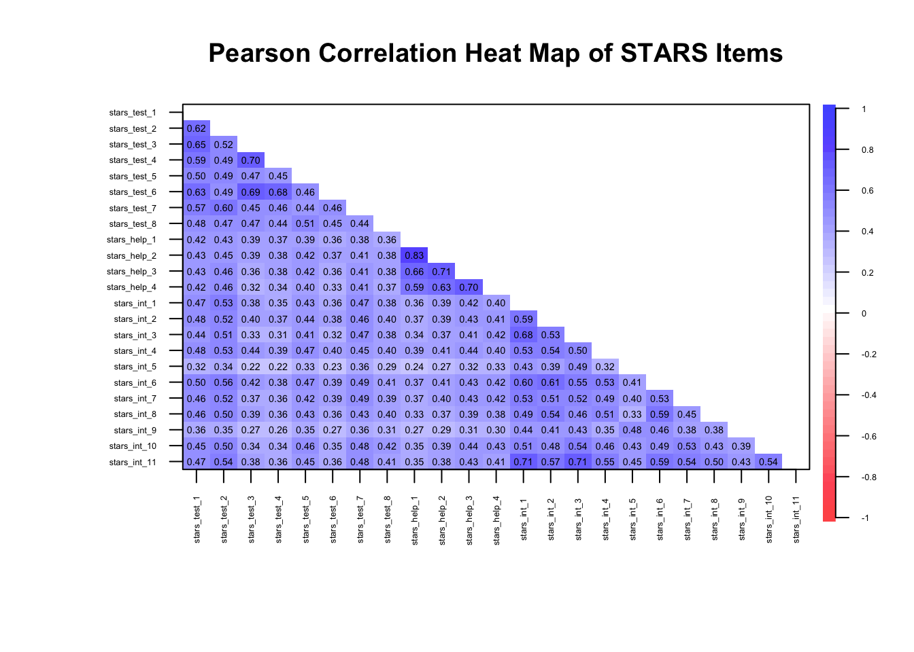
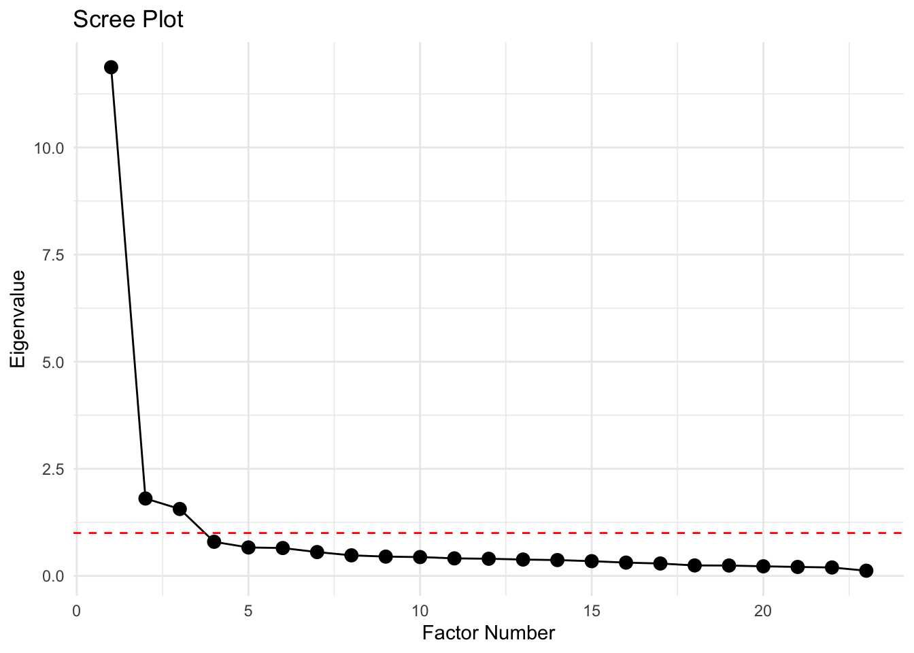
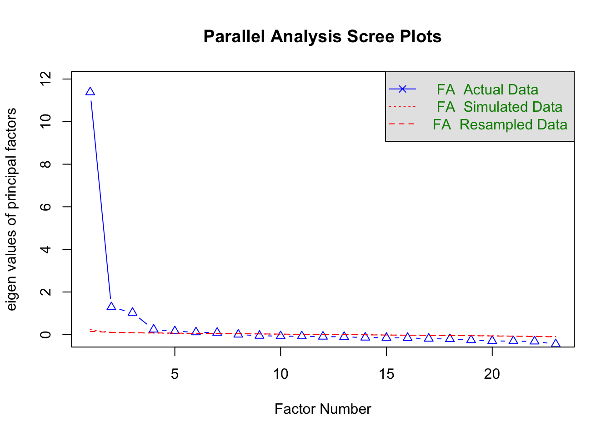
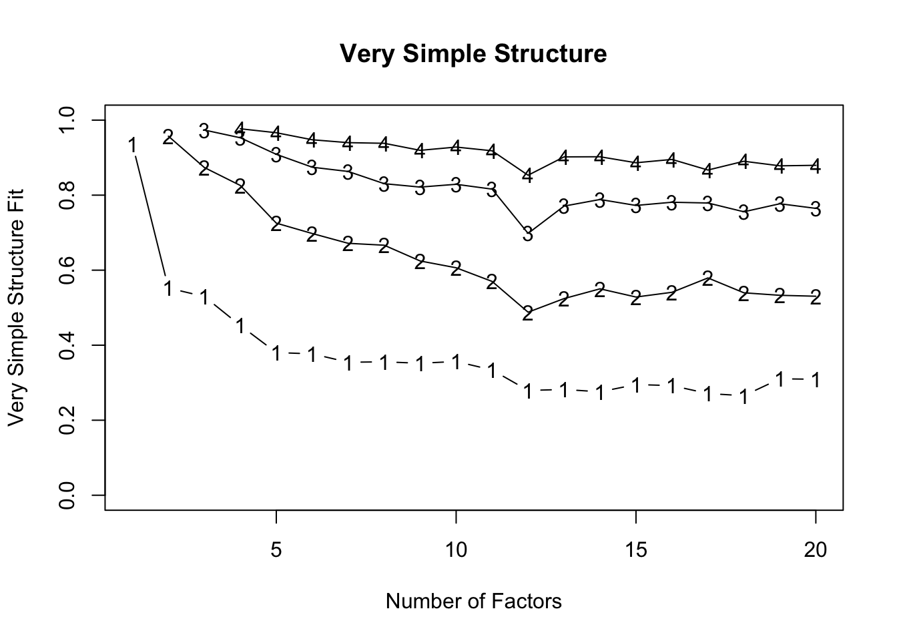

stars_data <- here::here("data/stars_data.csv")|>
readr::read_csv()7 Exploratory Factor Analysis
7.1 EFA (Week 7) Overview
Learning Objectives
By the end of the Week 7 tutorial & workshop, students will be able to:
Assess whether a dataset is suitable for EFA, including evaluating factorability and sample size considerations.
Determine the number of factors to retain using multiple decision criteria (e.g., scree plot, parallel analysis, eigenvalues), and justify their choice.
Differentiate between rotation methods (orthogonal vs. oblique) and justify their selection.
Interpret factor loadings, cross-loadings, and communalities to evaluate item performance.
Evaluate and refine a factor solution, identifying problematic items and considering theoretical coherence.
Report factor analytic results clearly and transparently, justifying analytic decisions and linking statistical findings to substantive conclusions.
Structure
Section 1: Lecture
Introduction - a recap of why psychological measurement is important, a reminder of the scale development process, and an outline of which elements we’ll be covering on Advanced Statistics.
Part 1: Understanding EFA - an introduction to the core conceptual and statistical foundations of EFA and reliability analysis.
We will cover the key points of Section 1 in the lecture section of the workshop.
Section 2: Code Walkthrough
- Part 2: Conducting an EFA - how to understand and conduct each step of a comprehensive EFA using the
psychpackage in R, from pre-analysis checks to interpretation and reporting.
This part of the tutorial will be be covered in the code walkthrough section of the workshop, interpersed with lecture-style explanations. Again, you do not need to read this in advance, but can if you wish.
Section 3: Worksheet
- Part 3: Worksheet - a series of exercises for you to practice conducting an EFA.
This part of the tutorial is for you to complete independently, in the final section of the workshop.
7.2 Introduction
Why Measurement Matters
Psychology is a measurement discipline. We cannot usually observe the constructs we are studying (e.g., anxiety, motivation, identity, IQ, attraction) directly. Rather, we observe responses to items on a measurement scale and infer the existence and level of latent constructs.
If the measurement is weak, everything built on top of it is unstable:
Effect sizes shrink or fluctuate unpredictably - measurement error attenuates associations and inflates standard errors
Group comparisons may be invalid - without testing measurement invariance, observed differences may reflect item bias rather than true latent differences
Replication becomes unstable - if different studies operationalise constructs inconsistently, apparent “replication failures” may reflect measurement differences rather than theoretical problems
Literature syntheses are misleading or incomplete - if a scale does not capture what it is purported to, then the findings it generates do not accumulate into coherent evidence about a construct, but instead aggregate measurement error, construct drift, and conceptual confusion
Statistical sophistication cannot rescue poor measurement. A beautifully specified structural model is still built on sand if the indicators are noisy or invalid.
Measurement quality sets the ceiling for the quality of every conclusion that follows.
Despite this, psychological researchers often:
Adopt scales without scrutinising their structure
Rely on Cronbach’s alpha as a badge of legitimacy
Skip confirmatory testing
Ignore measurement invariance
Treat validation as a one-off box-ticking exercise
The field has historically prioritised theoretical novelty and statistical significance over instrument quality. Scale development is sometimes treated as a preliminary hurdle rather than a central scientific task.
This is partly cultural. Measurement work is slow, iterative, and rarely flashy. It doesn’t always produce “exciting” findings, and yet it determines whether those findings mean anything at all.
Scale Development Process
Developing a psychological scale is a multi-stage process that moves from theory to statistical testing and back again.
Generally speaking, it should follow these key phases:
Define the construct
Generate items
Collect data
Explore scale structure and remove problematic items (EFA)
Evaluate internal consistency of the factors (reliability analysis)
Collect new data (or split the EFA data and use the remaining portion)
Evaluate the factor structure suggested by EFA using confirmatory factor analysis (CFA)
Evaluate whether the scale measures the same construct in the same way across groups (measurement invariance; MI)
Collect new data (ideal, but rare in practice)
- Examine validity evidence (e.g., convergent/discriminant validity, criterion validity)
Ongoing validity and generalisabilty checks (also rare in practice)
- Evaluate and refine the scale across new samples, contexts, and time
On Advanced Statistics, we will predominantly focus on the core (and more analystically complex) statistical elements of scale development (EFA, CFA, and MI), but keep the other stages in mind should you ever go on to develop a scale IRL.
7.3 Part 1: Understanding EFA
Conceptual Foundations
What is EFA & Why Do We Use It?
Exploratory Factor Analysis (EFA) is a family of statistical methods used to infer latent structure from covariance patterns among observed variables.
Let’s break down what that actually means…
Observed variables are what we can capture through, for example, questionnaire items or test scores. They are assumed to be (imperfect) indicators of unobserved underlying constructs that cannot be measured directly (e.g., anxiety, motivation, identity, IQ, attraction etc.).
These unobserved constructs are called latent variables.
The latent structure of a measurement scale refers to how many latent variables exist, how strongly they influence each observed variable, and how those latent variables relate to one another.
EFA does not analyse individual responses in isolation. Instead, it focuses on covariance — the extent to which variables change together across individuals. When a set of observed variables consistently covary more strongly with each other than with other variables, this suggests the presence of a shared latent influence.
EFA models these shared patterns of covariance as latent factors (statistical representations of latent variables), while separating them from variance that is unique to each variable or attributable to measurement error. In this way, EFA treats observed variables as noisy signals and uses their shared variance to reconstruct the hidden structure that gives rise to them.
At its core, EFA relies on a simple idea: if two items correlate more strongly with each other than with other items, it is likely that the same latent factor is influencing both.
A factor, therefore, is a source of shared variance, not a theme, topic, or label. The statistics don’t know anything about constructs. We apply the labels after the statistics.
What is the difference between covariance and correlation?
Covariance is in raw units, so cannot be compared to covariances on difference scales — change the units and the covariance changes.
Correlation is a standardised covariance, so can be compared to other correlations — change the units and the correlation stays the same.
They both represent the direction of the relationship between variables, but only correlations tell you the strength of that relationship.
You should consider EFA when:
You have a set of items (e.g., Likert scale statements)
You believe they reflect a smaller number of unobserved (latent) variables
You do not want to impose a strict model in advance (you’d use CFA for this)
EFA is exploratory (unlike CFA) because:
The number of factors is not fixed in advance
Items are allowed to load on multiple factors (although you can specify cross-loadings in CFA)
The model is discovered from the data rather than imposed beforehand
Statistical Foundations
The Factor Model
Each observed variable is assumed to consist of two components:
Common variance — variance shared with other items because they reflect the same underlying factor(s)
Unique variance — variance specific to that item, including measurement error
In other words, each item is treated as a combination of underlying latent influences plus some item-specific noise.
EFA assumes that:
Latent factors are unobserved variables that influence multiple items
Each item can be influenced by one or more factors
The strength of the relationship between an item and a factor is called a factor loading.
Items with large loadings on the same factor tend to correlate with one another because they share a common underlying source of variance.
Factor Model Equation
Formally, each observed item (\(X_i\)) is modelled as a linear combination of latent factors plus unique variance:
\[ X_i = \lambda_{i1} F_1 + \lambda_{i2} F_2 + \dots + \epsilon_i \]
\(x_i\) = observed score for item \(i\)
Each \(F_j\) (i.e., the \(F_1\), \(F_2\) etc.) is a latent factor — an unobserved variable assumed to influence multiple items
The factor loading (\(\lambda_ij\)) indicates how strongly factor \(j\) influences item \(i\)
\(epsilon_i\) captures all remaining variance that is specific to item (\(i\)), including measurement error
The key idea is that an observed item is treated as a weighted combination of latent influences plus noise.
Importantly, this is a measurement assumption, not something you compute directly. The model describes how we assume the data were generated — it isn’t just a formula you plug numbers into.
EFA then works backwards from the correlation matrix to estimate the factors that best reproduce those relationships.
In that sense, a factor model is similar to a linear model, but instead of using observed predictors to explain an outcome, it uses unobserved predictors (latent factors) to explain correlations among variables.
What happens to variance?
Under the factor model, the total variability in each item is partitioned into:
Variance explained by the latent factors (aka: shared variance; common variance; communality)
Variance unique to the item
EFA aims to identify a small number of factors that explain as much of the shared variance as possible, while leaving item-specific variance unexplained.
Observed Item Variance Equation
\[ \mathrm{Var}(X_i) = \sum_j \lambda_{ij}^2 \, \mathrm{Var}(F_j) + \mathrm{Var}(\epsilon_i) \]
This equation describes how the variance of an observed item is partitioned under the factor model.
\(\mathrm{Var}(X_i)\) = the total variability in item \(i\) across people. This is the variance you would compute directly from the data for that item. Everything on the right-hand side must add up to this.
\(\sum_j\) means, “add up the contribution from each factor”
\(\lambda_{ij}^2\) asks, “how much variance in item \(i\) is attributable to factor \(j\)?”
\(\lambda_{ij}\) is the loading of item \(i\) on factor \(j\)
Squaring it converts a relationship into variance explained
So, a large loading contributes a lot of variance; a small loading contributes very little
\(\mathrm{Var}(F_j)\) asks, “how much variability is in factor \(j\) itself?”.
- In many factor models, factors are standardised so that \(\mathrm{Var}(F_j)\) = 1. In that case, this term drops out and the squared loadings alone determine variance explained.
Overall, the equation essentially means: The total variance of item \(i\) equals the variance explained by all latent factors plus variance that is unique to that term.
7.4 Part 2: Conducting an EFA
EFA Process Overview
To run an EFA, you will usually complete the following steps:
Pre-analysis suitability checks:
Data requirements
Correlation matrix inspection
Kaiser–Meyer–Olkin (KMO) measure
Bartlett’s test of sphericity
Factor estimation (of how many to extract)
Factor rotation (of extracted factors)
Interpret the loadings and other output
Report (tables and in-text)
We are now going to walk through how to complete each of these steps using a worked example.
The Statistics Anxiety Rating Scale (STARS)
We are going to analyse scores for the following 23 items designed to measure three facets (subscales) of statistics anxiety1 (no items are reverse-scored):
| Variable | Subscale | Item |
| stars_test_1 | Test and Class Anxiety | Studying for an examination in a statistics course |
| stars_test_2 | Test and Class Anxiety | Doing the coursework for a statistics course |
| stars_test_3 | Test and Class Anxiety | Doing an examination in a statistics course |
| stars_test_4 | Test and Class Anxiety | Walking into the room to take a statistics test |
| stars_test_5 | Test and Class Anxiety | Finding that another student in class got a different answer than I did to a statistical problem |
| stars_test_6 | Test and Class Anxiety | Waking up in the morning on the day of a statistics test |
| stars_test_7 | Test and Class Anxiety | Enrolling in a statistics course |
| stars_test_8 | Test and Class Anxiety | Going over a final examination in statistics after it has been marked |
| stars_help_1 | Fear of Asking for Help | Going to ask my statistics teacher for individual help with material I am having difficulty understanding |
| stars_help_2 | Fear of Asking for Help | Asking one of my teachers for help in understanding statistical output |
| stars_help_3 | Fear of Asking for Help | Asking someone in the computer lab for help in understanding statistical output |
| stars_help_4 | Fear of Asking for Help | Asking a fellow student for help in understanding output |
| stars_int_1 | Interpretation Anxiety | Interpreting the meaning of a table in a journal article |
| stars_int_2 | Interpretation Anxiety | Making an objective decision based on empirical data |
| stars_int_3 | Interpretation Anxiety | Reading a journal article that includes some statistical analyses |
| stars_int_4 | Interpretation Anxiety | Trying to decide which analysis is appropriate for my research project |
| stars_int_5 | Interpretation Anxiety | Reading an advertisement for a car which includes figures on miles per gallon, depreciation, etc. |
| stars_int_6 | Interpretation Anxiety | Interpreting the meaning of a probability value once I have found it |
| stars_int_7 | Interpretation Anxiety | Arranging to have a body of data put into the computer |
| stars_int_8 | Interpretation Anxiety | Determining whether to reject or retain the null hypothesis |
| stars_int_9 | Interpretation Anxiety | Trying to understand the odds in a lottery |
| stars_int_10 | Interpretation Anxiety | Watching a student search through a load of computer output from his/her research |
| stars_int_11 | Interpretation Anxiety | Trying to understand the statistical analyses described in the abstract of a journal article |
Participants responded to each item with a 1 (low) to 5 (high) rating of how anxious they feel in each situation (making this a Likert scale2).
So, first, let’s read in our data. Make a mental note of the sample size (look at the number of observations reported in the environment pane).
- Define the path to your CSV data file using the
herepackagehere()constructs file paths relative to your project root and avoids hardcoding absolute paths, making your code more portable across computers- The pipe
|>passes the file path fromhere()directly intoread_csv(), making the code cleaner
readr::read_csv()reads in the.csvfile (it is faster and more consistent than base R’sread.csv())
Pre-Analysis Suitability Checks
Data Requirements
EFA is most appropriate when you have:
Continuous or ordinal3 (Likert-type) variables — the response scale should tell us this
Roughly linear relationships among continuous variables / monotonic relationships4 among ordinal variables — we usually don’t need to formally test this, stable, interpretable correlations are often enough5
A factorable correlation matrix (i.e., items share sufficient common variance)
An adequate sample size, relative to the number of items — a common rule of thumb is 5-10 participants per item (but see below for some important caveats)
Item response scores are keyed in the same direction (i.e., if you have reverse-scored items, they are recoded before analysis)
What is an adequate sample size?
A common rule of thumb is 5–10 participants per item, but this should not be treated as a strict requirement. Required sample size depends on several factors, including:
The size of factor loadings
The number of factors
The degree of factor overdetermination (the number of items per factor)
The amount of unique variance in the items
Simulation studies show that stable factor solutions can sometimes be obtained with smaller samples when loadings are strong and factors are well defined, and that much larger samples may be required when loadings are weak or structures are complex (Mundfrom, Shaw, and Ke 2005).
These guidelines are heuristics, not laws, and should be interpreted in the context of the data and the research goals.
🤔 Do you think the STARS dataset meets those requirements (from what we’ve seen so far)?
Solution
✔️ The data is ordinal (from a 1-5 Likert scale)
❓ We haven’t calculated any correlations yet, so we do not know whether the data has the assumed relationships
❓ We haven’t explored the factorisability of the correlation matrix yet either
✔️ The conservative rule of thumb estimate suggests we’d need 230 participants for the 23 STARS items. We have n = 6885, so we’re probably good!
✔️ There are no reverse-scored items on the STARS
Factorisability of the Correlation Matrix
Before running an EFA, it is essential to examine the factorisability of the correlation matrix.
As well as using it as a proxy to check for linear/monotonic relationships, EFA relies on shared variance between variables. Without sufficient correlations, there is no latent structure to recover.
We can evaluate factorability by examining:
The correlation matrix
The determinant
The Kaiser–Meyer–Olkin (KMO) measure
Bartlett’s test
Do you need all four? Not really. The determinant and Bartlett’s are rarely informative on their own, and inspection of the correlation matrix and the KMO measure is usually enough.
For that reason, we’ll focus on the correlation matrix and KMO in the workshop, but this tutorial contains explanations of the determinant and Bartlett’s too (it is worth knowing a little about them as they’re widely reported).
Correlation Matrix
For EFA to be informative, the correlation matrix should strike a balance:
Enough moderate correlations to support latent factors
Not so many extreme correlations that items become redundant
In other words, EFA works best when items are related, but not interchangeable.
How many correlations is enough?
Roughly 30–60% of correlations above .20 is often reassuring: it suggests there are moderate relationships to support latent factors
Below ~30% above .20 can indicate weak or diffuse structure, but this depends on the number and diversity of items; low percentages don’t automatically mean EFA is pointless
Above ~70–80% above .20 may suggest high item homogeneity or a dominant single factor, but multiple interpretable factors can still emerge if item clusters differ subtly
Key point: focus on patterns of correlations rather than just counts. Look for pockets of stronger relationships within clusters of items, rather than treating percentages as strict thresholds.
To test for this, you should obtain a correlation matrix for all items:
Pearson correlations for continuous data
Polychoric correlations for ordinal data
What to do if there are too many correlations >= .20 …
If the majority of correlations are close to zero, this indicates that the items do not systematically vary together. In this situation, EFA is inappropriate because there is little shared variance for latent factors to explain.
What this means:
Items may be measuring unrelated constructs
The scale may be poorly designed or overly heterogeneous
Any extracted factors are likely to be unstable or uninterpretable
What to do:
Reconsider whether the items belong in the same analysis
Check for data issues (e.g., coding errors, reversed items not corrected)
Consider analysing subsets of items rather than the full set
In some cases, factor analysis may simply not be the right too
What to do if there are too many correlations above >= .80 …
Extremely high correlations (e.g., r > .80) suggest redundancy between items.
What this means:
Items may be near-duplicates, meaning they do not contribute new information about the latent structure.
Redundant items can distort factor extraction and inflate reliability estimates by:
- Dominating a factor simply by virtue of being repeated, thus overweighting a narrow slice of content
- Masking the presence of other, weaker but theoretically meaningful factors
- Encourage the extraction of spurious factors driven by duplication rather than structure
The correlation matrix may become ill-conditioned, meaning it is close to being singular (items are so highly correlated that the correlation matrix contains almost no independent information) and difficult to factorise numerically. This can lead to:
Unstable or non-converging factor solutions
Erratic or implausible factor loadings
Sensitivity of results to small changes in the data
What to do:
Check whether redundancy reflects shared method effects (e.g., items with identical wording structures, reverse-worded item pairs, items presented adjacently in the questionnaire), rather than substantive overlap. If so, you may need to design new items and collect new data.
Consider removing redundant items, retaining only the item with clearer wording or better theoretical justification, then re-running the analysis.
There are seemingly endless ways to get Pearson (and Spearman) correlation matrices in R, but polychoric correlations are not featured in many popular packages/functions. One package that does allow for polychoric correlations is the psych package (Revelle 2025), which we’ll also be using for our core EFA.
So, let’s get our polychoric correlation matrix.
Note that to do this cleanly, your dataset should contain only your scale items — no other variables at all. For simplicity, other variables have already been stripped from stars_data, but you can remove them using dplyr::select() should you ever need to.
- Compute the polychoric correlation matrix for ordinal data
psych::polychoriccomputes the correlation matrix for ordinal data$rhoextracts just the correlation matrix from the full output ofpolychoric(), which otherwise includes thresholds and other info
- Print the resulting correlation matrix to inspect it
stars_corr <- psych::polychoric(stars_data)$rho
stars_corr stars_test_1 stars_test_2 stars_test_3 stars_test_4 stars_test_5
stars_test_1 1.0000000 0.6767451 0.7286300 0.6554675 0.5413500
stars_test_2 0.6767451 1.0000000 0.6016608 0.5560360 0.5405432
stars_test_3 0.7286300 0.6016608 1.0000000 0.7759946 0.5265162
stars_test_4 0.6554675 0.5560360 0.7759946 1.0000000 0.5004170
stars_test_5 0.5413500 0.5405432 0.5265162 0.5004170 1.0000000
stars_test_6 0.6917116 0.5469282 0.7647331 0.7447270 0.5069987
stars_test_7 0.6342601 0.6577143 0.5475559 0.5378949 0.4934181
stars_test_8 0.5291428 0.5217100 0.5433412 0.5037321 0.5585235
stars_help_1 0.4591863 0.4724600 0.4527137 0.4289466 0.4330288
stars_help_2 0.4710308 0.4870711 0.4558323 0.4373924 0.4583327
stars_help_3 0.4772407 0.5051205 0.4277018 0.4350908 0.4720669
stars_help_4 0.4729416 0.5156707 0.3945414 0.3994488 0.4586214
stars_int_1 0.5156484 0.5784173 0.4394119 0.4058741 0.4724705
stars_int_2 0.5246601 0.5644770 0.4675088 0.4254834 0.4887230
stars_int_3 0.4941001 0.5651670 0.3901054 0.3623179 0.4662638
stars_int_4 0.5197592 0.5753144 0.4920961 0.4422018 0.5152183
stars_int_5 0.3926770 0.4122160 0.2853014 0.2812906 0.4033404
stars_int_6 0.5541979 0.6109467 0.4950429 0.4412583 0.5167793
stars_int_7 0.5171724 0.5714769 0.4364096 0.4190704 0.4692882
stars_int_8 0.5105957 0.5456889 0.4654278 0.4168219 0.4806967
stars_int_9 0.4084630 0.4036227 0.3321101 0.3040064 0.4067340
stars_int_10 0.5087356 0.5519170 0.4013256 0.4029202 0.5166250
stars_int_11 0.5148603 0.5843910 0.4355735 0.4075915 0.4978851
stars_test_6 stars_test_7 stars_test_8 stars_help_1 stars_help_2
stars_test_1 0.6917116 0.6342601 0.5291428 0.4591863 0.4710308
stars_test_2 0.5469282 0.6577143 0.5217100 0.4724600 0.4870711
stars_test_3 0.7647331 0.5475559 0.5433412 0.4527137 0.4558323
stars_test_4 0.7447270 0.5378949 0.5037321 0.4289466 0.4373924
stars_test_5 0.5069987 0.4934181 0.5585235 0.4330288 0.4583327
stars_test_6 1.0000000 0.5384498 0.4994262 0.4110779 0.4225677
stars_test_7 0.5384498 1.0000000 0.4916535 0.4273740 0.4562820
stars_test_8 0.4994262 0.4916535 1.0000000 0.3918322 0.4128423
stars_help_1 0.4110779 0.4273740 0.3918322 1.0000000 0.8753513
stars_help_2 0.4225677 0.4562820 0.4128423 0.8753513 1.0000000
stars_help_3 0.4077383 0.4644393 0.4278195 0.7216175 0.7611022
stars_help_4 0.3851191 0.4699852 0.4149585 0.6560557 0.6939811
stars_int_1 0.4127374 0.5223178 0.4251492 0.3940104 0.4224899
stars_int_2 0.4319815 0.5162277 0.4450732 0.4055712 0.4297500
stars_int_3 0.3699661 0.5291169 0.4334034 0.3744595 0.4135174
stars_int_4 0.4478426 0.5048492 0.4418870 0.4258798 0.4503000
stars_int_5 0.2834775 0.4357967 0.3557455 0.2907694 0.3242799
stars_int_6 0.4424113 0.5404589 0.4486198 0.4126413 0.4450497
stars_int_7 0.4424659 0.5441493 0.4416187 0.4068671 0.4398692
stars_int_8 0.4185313 0.4791750 0.4470115 0.3706113 0.4059248
stars_int_9 0.3152230 0.4157494 0.3591834 0.3040868 0.3313357
stars_int_10 0.4065813 0.5351971 0.4684043 0.3907541 0.4365575
stars_int_11 0.4133089 0.5357890 0.4491038 0.3888181 0.4206260
stars_help_3 stars_help_4 stars_int_1 stars_int_2 stars_int_3
stars_test_1 0.4772407 0.4729416 0.5156484 0.5246601 0.4941001
stars_test_2 0.5051205 0.5156707 0.5784173 0.5644770 0.5651670
stars_test_3 0.4277018 0.3945414 0.4394119 0.4675088 0.3901054
stars_test_4 0.4350908 0.3994488 0.4058741 0.4254834 0.3623179
stars_test_5 0.4720669 0.4586214 0.4724705 0.4887230 0.4662638
stars_test_6 0.4077383 0.3851191 0.4127374 0.4319815 0.3699661
stars_test_7 0.4644393 0.4699852 0.5223178 0.5162277 0.5291169
stars_test_8 0.4278195 0.4149585 0.4251492 0.4450732 0.4334034
stars_help_1 0.7216175 0.6560557 0.3940104 0.4055712 0.3744595
stars_help_2 0.7611022 0.6939811 0.4224899 0.4297500 0.4135174
stars_help_3 1.0000000 0.7684505 0.4570433 0.4738320 0.4602737
stars_help_4 0.7684505 1.0000000 0.4442760 0.4633826 0.4725865
stars_int_1 0.4570433 0.4442760 1.0000000 0.6444856 0.7419513
stars_int_2 0.4738320 0.4633826 0.6444856 1.0000000 0.5875174
stars_int_3 0.4602737 0.4725865 0.7419513 0.5875174 1.0000000
stars_int_4 0.4847347 0.4539941 0.5883398 0.5931051 0.5558263
stars_int_5 0.3865073 0.3995667 0.5144825 0.4675816 0.5721879
stars_int_6 0.4717661 0.4725472 0.6559367 0.6628256 0.6063735
stars_int_7 0.4828963 0.4684094 0.5853520 0.5620401 0.5796000
stars_int_8 0.4348479 0.4328599 0.5426399 0.5952025 0.5141672
stars_int_9 0.3553870 0.3521408 0.4977066 0.4698620 0.4886889
stars_int_10 0.4917674 0.4912587 0.5604722 0.5340001 0.6027767
stars_int_11 0.4734009 0.4616378 0.7619328 0.6249091 0.7745186
stars_int_4 stars_int_5 stars_int_6 stars_int_7 stars_int_8
stars_test_1 0.5197592 0.3926770 0.5541979 0.5171724 0.5105957
stars_test_2 0.5753144 0.4122160 0.6109467 0.5714769 0.5456889
stars_test_3 0.4920961 0.2853014 0.4950429 0.4364096 0.4654278
stars_test_4 0.4422018 0.2812906 0.4412583 0.4190704 0.4168219
stars_test_5 0.5152183 0.4033404 0.5167793 0.4692882 0.4806967
stars_test_6 0.4478426 0.2834775 0.4424113 0.4424659 0.4185313
stars_test_7 0.5048492 0.4357967 0.5404589 0.5441493 0.4791750
stars_test_8 0.4418870 0.3557455 0.4486198 0.4416187 0.4470115
stars_help_1 0.4258798 0.2907694 0.4126413 0.4068671 0.3706113
stars_help_2 0.4503000 0.3242799 0.4450497 0.4398692 0.4059248
stars_help_3 0.4847347 0.3865073 0.4717661 0.4828963 0.4348479
stars_help_4 0.4539941 0.3995667 0.4725472 0.4684094 0.4328599
stars_int_1 0.5883398 0.5144825 0.6559367 0.5853520 0.5426399
stars_int_2 0.5931051 0.4675816 0.6628256 0.5620401 0.5952025
stars_int_3 0.5558263 0.5721879 0.6063735 0.5796000 0.5141672
stars_int_4 1.0000000 0.3903262 0.5871421 0.5417861 0.5678065
stars_int_5 0.3903262 1.0000000 0.4828174 0.4812664 0.3860624
stars_int_6 0.5871421 0.4828174 1.0000000 0.5808176 0.6405206
stars_int_7 0.5417861 0.4812664 0.5808176 1.0000000 0.5013125
stars_int_8 0.5678065 0.3860624 0.6405206 0.5013125 1.0000000
stars_int_9 0.4074692 0.5671745 0.5188481 0.4397614 0.4243204
stars_int_10 0.5144369 0.5054132 0.5394840 0.5868595 0.4857371
stars_int_11 0.5989941 0.5284997 0.6421595 0.5966207 0.5491214
stars_int_9 stars_int_10 stars_int_11
stars_test_1 0.4084630 0.5087356 0.5148603
stars_test_2 0.4036227 0.5519170 0.5843910
stars_test_3 0.3321101 0.4013256 0.4355735
stars_test_4 0.3040064 0.4029202 0.4075915
stars_test_5 0.4067340 0.5166250 0.4978851
stars_test_6 0.3152230 0.4065813 0.4133089
stars_test_7 0.4157494 0.5351971 0.5357890
stars_test_8 0.3591834 0.4684043 0.4491038
stars_help_1 0.3040868 0.3907541 0.3888181
stars_help_2 0.3313357 0.4365575 0.4206260
stars_help_3 0.3553870 0.4917674 0.4734009
stars_help_4 0.3521408 0.4912587 0.4616378
stars_int_1 0.4977066 0.5604722 0.7619328
stars_int_2 0.4698620 0.5340001 0.6249091
stars_int_3 0.4886889 0.6027767 0.7745186
stars_int_4 0.4074692 0.5144369 0.5989941
stars_int_5 0.5671745 0.5054132 0.5284997
stars_int_6 0.5188481 0.5394840 0.6421595
stars_int_7 0.4397614 0.5868595 0.5966207
stars_int_8 0.4243204 0.4857371 0.5491214
stars_int_9 1.0000000 0.4451131 0.4902225
stars_int_10 0.4451131 1.0000000 0.5932773
stars_int_11 0.4902225 0.5932773 1.0000000Urgh! We have so many correlation pairs that we just get a wall of numbers. This is incredibly common in EFA so let’s take a quick diversion into creating readable correlation matrix tables.
Correlation Heatmaps
Correlation heatmaps are especially useful in EFA because they can make patterns of shared variance visible at a glance.
Clusters of stronger correlations appear as darker red (negative correlations) or blue (positive correlations) and often correspond to latent factors.
Weak or isolated correlations can quickly reveal items that may not belong in the same analysis.
We can see that in action in the example below. Note that the variables [items] in this dataset have been grouped with other items from their expected subscales so that the clustering is easier to spot, but this won’t always be the case.
- Create a visual heatmap of correlations using the
cor.plot()function from thepsychpackage - Input correlation matrix to visualise (here, the polychoric correlations from
stars_data) - Show only the lower triangle of the correlation matrix to reduce visual clutter
- Do not display the diagonal (all 1s) since it’s usually uninformative
- Adjust the size of the correlation values printed on the heatmap so they fit and are readable
- Adjust the size of axis labels (the item names) to fit them all in without overlap
- Rotate axis labels so text doesn’t overlap (
2= perpendicular to axis) - Add a main title to the heatmap for clarity
stars_heatmap <- psych::cor.plot(
stars_corr,
upper = FALSE,
diag = FALSE,
cex = 0.3, #<5>##
cex.axis = 0.4,
las = 2,
main = "Polychoric Correlation Heat Map of STARS Items"
)🤔 What can you infer from the heatmap?
Solution
⚠️ All correlations are moderate (> .28) so there should be enough shared variance for latent factors to explain, but with so many (100%), it could be indicative of one big shared underlying construct
⚠️ There are several very high correlations, albeit only one approaching .90, so there may be some redundancy
✔️ Items are at least moderately strongly correlated with other items within a given subscale, suggesting they cluster as expected
✔️ The correlations appear stable and interpretable, consistent with monotonic relationships
✔️ Overall, the correlations indicate that data is likely suitable for EFA…
⚠️… but we may be dealing with unidimensionality
What if the data was continuous?
If we had continuous data, we’d simply calculate a matrix of Pearson correlations, like so:
- Compute a Pearson correlation matrix for the STARS data, handling missing values pairwise (
use = "pairwise.complete.obsmeans that each correlation is computed using all cases where both variables have non-missing values) - The Pearson correlation matrix is then passed into the
psych::cor.plotfunction and the arguments set as for the polychoric version above (you could also pass the polychoric correlation matrix directly intopsych::cor.plot)
The remaining arguments are as for the polychoric matrix.
cor(stars_data, use = "pairwise.complete.obs") |>
psych::cor.plot(
upper = FALSE,
diag = FALSE,
cex = 0.3,
cex.axis = 0.4,
las = 2,
main = "Pearson Correlation Heat Map of STARS Items"
)
Why are the correlation magnitudes different to the polychoric matrix?
Pearson correlations assume continuous, normally distributed variables and measure linear relationships, whereas polychoric correlations assume the observed ordinal items reflect underlying continuous latent variables and estimate the correlation between those latent traits.
As a result, polychoric correlations are usually larger for ordinal data, especially with few response categories, because they correct for the compression of variance inherent in ordinal scaling.
If you have a large number of items it can be difficult to count the number of correlations under or over a given value. We can use R to count them for us:
upper.tri(stars_corr, diag = FALSE)upper.tri()creates a logical matrix the same size asstars_corr- It marks
TRUEfor cells in the upper triangle andFALSEelsewhere diag = FALSEensures the diagonal is excluded (so we don’t include the 1.00 self-correlations)
stars_corr[...]When you subset a matrix with a logical matrix, R returns only the values corresponding to
TRUEThe result is a vector of unique correlations (no duplicates, no diagonal)
c()stands for combine — it creates a named numeric vector containing the results we calculate inside itunder_20 = mean(abs(cors) <= .20) * 100,under_20 =creates a vector calledunder_20abs(cors)calculates the absolute value (i.e., ignores the signs) of each correlation incorsabs(cors) <= .20creates a logical vector: TRUE if the absolute correlation is less than or equal 0.20, FALSE otherwisemean(abs(cors) <= .20)converts the logical vector into a proportion: TRUE counts as 1, FALSE as 0;meangives the proportion of correlations under 0.20 (counting how many TRUEs there are and dividing by the total)* 100converts the proportion into a percentage, so 0.3 becomes 30%
over_80 = mean(abs(cors) >= .80) * 100- As above, except the vector is named
over_80and>= .80gives the proportion of correlations over or equal to 0.80
- As above, except the vector is named
cors <- stars_corr[upper.tri(stars_corr, diag = FALSE)]
c(
under_20 = mean(abs(cors) <= .20) * 100,
over_80 = mean(abs(cors) >= .80) * 100
) under_20 over_80
0.0000000 0.3952569 🤔 What can you infer from the correlation proportions?
Solution
⚠️ 0% of correlations are below or equal to .20, meaning they will be factorisable, but there may be one big underlying factor
⚠️ 40% of correlations are over or equal to .80 — a big red flag for redundancy and, again, a big underlying factor
The Determinant of the Correlation Matrix
Before extracting factors, we can inspect the determinant of the correlation matrix to ensure the matrix is not close to singular.
What is a singular matrix?
A singular matrix means the correlation matrix is too closely related to be inverted. Inverting the matrix is like trying to “undo” the correlations.
If some items are perfectly or nearly perfectly correlated, this undoing becomes impossible, and factor extraction can’t proceed reliably.
What is the determinant?
The determinant is a numerical summary of how linearly independent your variables are — essentially a statistical measure of the strength of the correlations in a matrix.
If items are highly redundant (i.e., almost perfectly correlated), the determinant approaches zero
If the matrix is exactly singular (determinant = 0), factor analysis cannot proceed because the matrix cannot be inverted
If the determinant is comfortably above zero, there is no serious multicollinearity6 problem
In applied work, values below .00001 are often flagged as potentially problematic
What does a very small determinant indicate?
A near-zero determinant suggests excessive multicollinearity. In practical terms, this usually means:
Two or more items are nearly identical in content
Items are reworded versions of the same statement
Reverse-coded items were not properly handled
You have redundancy masquerading as “strong structure”
Importantly, this is not evidence of strong factors. It is evidence of insufficient independence among indicators.
Factor analysis requires items to correlate — but not to be clones.
Why does this matter?
If items are almost perfectly correlated:
The factor solution becomes unstable
Standard errors inflate
Small sampling differences can drastically alter loadings
Interpretation becomes distorted
In short: redundancy reduces informational value.
Remember: A good scale samples a construct broadly. A bad scale repeats itself.
How should you use it?
The determinant is a diagnostic check, not a decision rule.
If it is extremely small:
Inspect the correlation matrix
Identify pairs of items with correlations > .80
Consider removing or revising redundant items before proceeding
If it is small but not extreme, and correlations are in a reasonable range, you can typically continue
How does it perform in very large samples?
In very large samples:
Correlations are estimated more precisely
Tiny redundancies become more apparent
You may observe very small determinants simply because the structure is very clean and items cluster tightly
So, a small determinant in a large sample does not automatically mean “problem”.
It means: Check whether you have extreme multicollinearity (e.g., item correlations > .80; you should already have spotted this in your correlation heat map).
If you don’t, and the matrix looks sensible, you move on.
How do I calculate the determinant?
To obtain the determinant in R, there are two steps:
- Calculate the appropriate (e.g., pearson vs. polychoric) correlation matrix
- Obtain the determinant of that correlation matrix
We have already calculated a polychoric correlation matrix for our data and stored it in stars_corrs, so we just need to enter that into Base R’s det function to get the determinant (1):
det(stars_corr)[1] 2.697537e-08🤔 What can we infer from the determinant?
Solution
⚠️ Our determinant is super-tiny — just 0.000000026975377!
In determinant terms, that’s getting into the “check for multicollinearity” territory (since it’s below .00001), but not automatically catastrophic — you’d want to inspect the correlation matrix for item pairs above ~.80 before panicking.
We already know we have some pairs above .80, so this tracks. It is something to keep an eye on as we move forward.
Kaiser–Meyer–Olkin (KMO) Measure
The Kaiser–Meyer–Olkin (KMO) measure assesses whether the correlations among variables are likely to be explained by underlying latent factors rather than unique pairwise relationships.
More specifically, it evaluates whether partial correlations between variables are small by comparing the size of observed correlations and the size of partial correlations:
A partial correlation between two variables is the correlation that remains after controlling for all other variables in the dataset.
A large partial correlation means two items are still strongly related even after accounting for all other items.
A small partial correlation means that the relationship between two items can largely be explained by their shared relationships with other items.
Generally speaking, high KMO values indicate that shared variance dominates and the data are suitable for factor analysis.
Below are the originally proposed formal guidelines — bounded from 0-1 — for interpreting KMO (Kaiser 1974):
< .50 → unacceptable
.50s → miserable
.60s → mediocre
.70s → middling
.80s → meritorious
.90s → marvellous (but this can signal a strong general factor, item redundancy, poor construct coverage)
To get the KMO values for both overall and item-level KMOs, you just enter your data into the KMO() function from the psych package (1):
psych::KMO(stars_data)Kaiser-Meyer-Olkin factor adequacy
Call: psych::KMO(r = stars_data)
Overall MSA = 0.96
MSA for each item =
stars_test_1 stars_test_2 stars_test_3 stars_test_4 stars_test_5 stars_test_6
0.97 0.98 0.94 0.95 0.98 0.95
stars_test_7 stars_test_8 stars_help_1 stars_help_2 stars_help_3 stars_help_4
0.98 0.98 0.90 0.90 0.95 0.96
stars_int_1 stars_int_2 stars_int_3 stars_int_4 stars_int_5 stars_int_6
0.97 0.98 0.96 0.98 0.96 0.98
stars_int_7 stars_int_8 stars_int_9 stars_int_10 stars_int_11
0.99 0.98 0.97 0.98 0.96 🤔 What can we infer from the KMO statistics?
Solution
✔️Overall KMO = .96
That’s extremely high (Kaiser would have called it “marvelous”). It tells us:
Partial correlations are very small relative to zero-order correlations
The items share a large amount of common variance
The correlation matrix is well suited to factor analysis
In practical terms: EFA is statistically justified.
✔️Item Level KMOs all > .90
That tells us:
No item is “out of place” in the correlation structure
None are undermining the common factor structure
You wouldn’t drop any item on KMO grounds
If we were seeing .50s or .60s for specific items, we’d start questioning those items. Here, there’s no red flag.
⚠️One important caveat:
A KMO of .96 is fantastic, but it can also signal:
Very strong general factor
High redundancy among items
Possibly overlapping item wording or narrow content coverage
So the inference is:
The data are statistically very suitable for EFA, but we should remain alert to whether the structure reflects distinct sub-factors or a dominant general factor.
Bartlett’s Test of Sphericity
Bartlett’s test of sphericity tests whether the tests the null hypothesis that the population correlation matrix is an identity matrix.
What is a population correlation matrix?
The population correlation matrix is the matrix of correlations you would obtain if you measured every single member of the population, not just your sample.
What we compute in R is the sample correlation matrix. That is used to estimate the population matrix.
What is an identity matrix?
An identity matrix is a correlation matrix where:
All diagonal values = 1 (each variable perfectly correlates with itself)
All off-diagonal values = 0 (no variables correlate with each other)
So, if the correlation matrix from your data was similar to its identity matrix, it would mean none of the items are correlated with each other.
If nothing correlates, there’s no shared variance, which means no latent factors to extract.
If the test is statistically significant, we reject that hypothesis and conclude:
The items do correlate.
The matrix contains shared variance
Factor analysis is statistically justified
However, Bartlett’s test is very sensitive to sample size and the statistical signficance test is only really interpretable in samples <100. Considering most EFAs will need samples larger than this, Bartlett’s is often uninformative.
In situations where you would want to calculate Bartlett’s, you can do that using the cortest.bartlett() function, again from psych (n = nrow(stars_data) specifies the sample size by counting the number of rows in the data) (1).
psych::cortest.bartlett(stars_corr, n = nrow(stars_data))$chisq
[1] 119828.6
$p.value
[1] 0
$df
[1] 253🤔 What can we infer from the results of the Bartlett’s test?
Solution
⚠️Bartlett’s test of sphericity was significant, χ²(253) = 119,828.60, p < .001, indicating that we can reject the null hypothesis that the population correlation matrix is an identity matrix and, therefore, the correlation matrix contained sufficient shared variance to justify factor analysis.
That said, this is a large sample, so Bartlett’s test will almost always be significant. The meaningful takeaway isn’t just “it’s significant”, it’s that the correlation structure clearly contains systematic covariance suitable for modelling.
How Many Factors to Extract?
Once we are sure our data is suitable for EFA, we move on to one of the most important — and most subjective — decisions in EFA: How many factors to extract?
Like many things in statistics, there is a lot of debate about the most appropriate and reliable factor extraction methods.
Common statistical options include:
Eigenvalues and the Kaiser Criterion - traditional “eigenvalue >1” rule; simple but often overestimates factors
Scree Plot - visual inspection of eigenvalues; look for the “elbow” where values level off
Parallel Analysis - compares observed eigenvalues to those from random data; widely recommended, but not without limitations
Velicer’s MAP (Minimum Average Partial) Test - examines residual correlations; tends to recommend fewer factors
Very Simple Structure (VSS) - checks how well a small number of factors reproduces the correlation matrix
Information Criteria (e.g., AIC, BIC) - typically for Maximum Likelihood (ML) extraction; penalised model complexity
Model Fit Indices - also for ML based EFA; chi-sq, RMSEA, CFI, TLI etc.
More recent developments include:
Hull Method - balances model fit and parsimony; less common but statistically elegant
Exploratory Graph Analysis - network-based approach to detect dimensionality; still emerging in practice
Remember, however, that the statistics do not have substantive knowledge of what you have measured, so it is also important to consider theoretical constraints.
We don’t have scope to review all of these in this tutorial, so we’re going to focus on a few of the more popular, reliable, and relevant methods. Namely, the scree plot and parallel analysis.
Scree Plot
A scree plot is a relatively simple visual tool that shows the eigenvalues of your correlation matrix in descending order.
What is an eigenvalue?
An eigenvalue is a number that tells you how much variance a factor explains in your data.
In the context of EFA:
Each factor corresponds to an eigenvalue
A larger eigenvalue means the factor accounts for more of the correlations among items
A small eigenvalue means the factor contributes very little unique information
Scree plots plot these eigenvalues in descending order, helping you decide how many factors to keep
In other words, eigenvalues summarise the “importance” of each factor in capturing the shared variation in your items
How Eigenvalues are Calculated
- Start with the correlation or covariance matrix \(R\) — a \(p\) x \(p\) matrix where each entry shows the correlation between items \(i\) and \(j\).
- Solve the characteristic equation:
\[ \det(R - \lambda I) = 0 \]
Where:
\(det\) = determinant of the matrix
\(I\) = identity matrix of size \(p\)
\(\lambda\) = eigenvalue
- Each eigenvalue \(\lambda_j\) represents the total variance in the observed variables explained by the corresponding factor. Larger eigenvalues indicate factors that capture more of the shared variance among items.
When interpreting a scree plot, two common approaches help decide how many factors to retain:
- The first is the elbow method, which looks for the point where the curve starts to level off — the “elbow.” Factors above this point explain substantial variance, while those below primarily represent noise.
- The second is the Kaiser criterion. According to this rule, only factors with eigenvalues greater than 1 should be retained, because they account for more variance than a single observed variable. In the plot, this line is usually shown as a dashed horizontal line, giving a clear visual guide for factor selection.
Together, the elbow and Kaiser methods provide complementary insights: the elbow shows the natural drop-off in explained variance, and the Kaiser line highlights which factors contribute meaningful variance individually.
While both methods are intuitive, it’s important to remember they are guidelines rather than strict rules, and judgement is needed when the “elbow” is not clearly defined.
What is the maths behind the scree plot?
Each eigenvalue of the correlation matrix measures the amount of variance explained by a factor. Formally, for a correlation matrix \(R\) of \(p\) items:
\[ R \mathbf{v}_j = \lambda_j \mathbf{v}_j \]
Where:
\(\lambda_j\) = eigenvalue for factor \(j\) (variance explained)
\(\mathbf{v_j}\) = eigenvector (factor loadings direction)
\(j\) = \(1,..., p\)
In a scree plot, we plot \(\lambda_1 \ge \lambda_2 \ge \dots \ge \lambda_p\). That sequence shows the eigenvalues of the factors in descending order. It means the first factor (\(\lambda_1\)) explains the most shared variance among items, the second factor (\(\lambda_2\)) explains the next largest portion, and so on, with later factors contributing progressively less.
We can obtain a scree plot from the same R function as we obtain the parallel analysis, but I usually prefer to create my own using ggplot2 because they are more readily customisable (to get them publication-ready) and usually clearer.
Calculate the eigenvalues of the correlation matrix by entering your correlation matrix into Base R’s
eigen()function, extract thevaluesspecifically, and store them ineigenvaluesCreate a tibble (using
tibble::tibble) calledscree_tibGenerate a sequence of eigenvalues and store it in
FactorStore the eigenvalues in a column called
EigenvaluesLoad the
ggplot2package so we don’t need to repeatedly specify the package name in the namespaces of theggplot2functionsInitialise a ggplot with the
scree_tib, and mappingFactorto the x-axis andEigenvalueto the y-axis with theaes()functionAdd points for each factor with
geom_point(), setting the size of the points to3Connect points with a line using
geom_line()Add the Kaiser criterion reference with a horizontal dashed (
linetype = "dashed") red (color = "red") line at y = 1 (yintercept = 1) using thegeom_hline()functionAdd plot title (
title =) and axis labels (x =;y =) using thelabs()functionApply a minimal theme (
theme_minimal()) to the plot for a clean appearance
## calculate eigenvalues from the correlation matrix
eigenvalues <- eigen(stars_corr)$values
## make a tibble for ggplot
scree_tib <- tibble::tibble(
Factor = seq_along(eigenvalues),
Eigenvalue = eigenvalues
)
## plot
library(ggplot2)
ggplot(scree_tib, aes(x = Factor, y = Eigenvalue)) +
geom_point(size = 3) +
geom_line() +
geom_hline(yintercept = 1, linetype = "dashed", color = "red") +
labs(
title = "Scree Plot",
x = "Factor Number",
y = "Eigenvalue"
) +
theme_minimal()
🤔 What can we infer from the scree plot?
Solution
This plot shows eigenvalues on the y-axis and factor numbers on the x-axis from a factor analysis.
Here’s what is worth noticing:
Factor 1 has a huge eigenvalue (~12) — that’s a dominant factor
Factors 2 and 3 drops to ~1.5, then the slope flattens — that is the “elbow”
Factors 5–23 have eigenvalues well below 1 (there is a long tail of tiny factors), so are likely just noise
Interpretation:
There’s one very strong factor, followed by one or two moderate factors, and then the rest are trivial
Depending on your theoretical goals, you would probably extract 2 or 3 factors — extracting more would mostly be capturing noise
Scree plots are mostly visual heuristics though. Combine them with parallel analysis for a more objective factor count.
Parallel Analysis
Parallel analysis (PA) builds on what scree plots show, but adds a more objective benchmark. It compares the eigenvalues from your actual data to those generated from random data of the same size and number of variables.
Only factors whose eigenvalues exceed the random-data values are retained, helping you avoid keeping components that exist just by chance.
This approach is widely considered best practice because it reduces the subjectivity of “eyeballing” a scree plot and gives a data-driven criterion for factor retention.
In short: it’s like asking, “Is this factor doing more than random noise would?” If yes, keep it; if not, toss it.
A note of caution: in large samples, even very small, trivial factors can produce eigenvalues that exceed the random-data threshold. This means PA can sometimes overestimate the number of factors. PA can also overestimate with ordinal data. In such samples, it’s therefore necessary to combine it with other information — like the scree plot, factor interpretability, or other indicators (see callout below).
To run a PA in R, we use the fa.parallel function from the psych package:
Before we run the PA, we need to set the seed so that our results can be reproduced. This is because PA uses random sampling in the background, meaning the values will be slightly different each time you run it. Setting the seed fixes the starting point of the random number generator so that any “random” results can be reproduced exactly in future.
We do that using Base R’s
set.seed()function. You just need to give it a numerical value. I usually use the date of the day I’m writing the code on, but you can choose which ever number you like.stars_datais the data (remember to ensure this only the items for the EFA)cor = "poly"specifies polychoric correlationsfm = "minres"is a common factor extraction method for ordinal data (see the callout below for more on factoring methods)fa = "fa"tellspsychto do factor analysis (rather than Principle Components Analysis8)
The output will give you another scree plot (sometimes slightly different to the ggplot version as it compares to randomly generated samples) and a line of text telling you the estimated number of factors.
set.seed(110326)
psych::fa.parallel(stars_data,
cor = "poly",
fm = "minres",
fa = "fa")
Parallel analysis suggests that the number of factors = 7 and the number of components = NA
Choosing a Factoring Method
When running EFA, you must choose how the factors are extracted.
Different methods make slightly different assumptions and optimise different criteria.
Common options:
minres(minimum residuals) — default and recommended for ordinal data- Minimises the residual differences between the observed and reproduced correlation matrices
- Works well with non-normal data
- Computationally stable
- Performs very similarly to other common factor methods in most psychological datasets
- In practice: a sensible default
ml(maximum likelihood) — best for continuous, approximately normal data- Estimates factor loadings by maximising the likelihood of the observed correlation matrix
- Allows for statistical tests of model fit (e.g., chi-square, RMSEA)
- Works best when data are continuous and roughly normally distributed
- In practice: ideal if you want inferential statistics on your factor solution
pa(principal axis factoring)- Iteratively estimates communalities9 and extracts factors from the reduced correlation matrix
- Historically very common in psychology
- Conceptually aligned with common factor modelling (shared variance only)
- In practice: usually produces very similar solutions to
minres
What if my data were continuous?
For continuous variables, you can also use the
fa.parallel()function inpsychYou should use maximum likelihood estimation (
fm = "ml") instead of minresfashould still befa(factor analysis)
Note that you don’t need to specify the type of correlation as Pearson is the default.
You can then interpret the output in the same way as for polychoric correlations.
psych::fa.parallel(stars_data,
fm = "ml",
fa = "fa")🤔 What can we infer from the parallel analysis?
Solution
The parallel analysis indicates there are 7 factors. That is quite a lot more than the 3 suggested by the scree plot.
The descrepency is probably because our data is ordinal and our sample size is very large.
IRL, you’d want to examine the discrepancy further using other factor estimation methods and — if needed — compare item clustering with different numbers of factors.
The callout below provides an overview of the main alternative estimation methods. Note that some are only interpretable with maximum likelihood estimation.
In the workshop, for the sake of time, we’re going to go ahead with the 3-factor solution.
Exploring Factor Estimation Discrepancies
If the indicators disagree, we should:
- Obtain additional estimates from other indicators and compare
- If it is still unclear, repeat the factor rotation with each suggested number of factors and decide which makes most theoretical sense (i.e., whether items cluster as expected)
We can get some additional indicators using psych’s VSS() function, like so:
- Enter your data (here,
stars_data) into thepsych::vss()function - Set the factor method to the same as your parallel analysis (here,
fm = minres) - Set the correlation type to the same as your parallel analysis (here,
core = poly) - Set the maximum number of factors (
n =) to test to20(the default is to stop at 8 and that is sometimes too low, especially in larger samples)
stars_vss <- psych::vss(stars_data,
fm = "minres",
cor = "poly",
n = 20)
stars_vss
Very Simple Structure
Call: psych::vss(x = stars_data, n = 20, fm = "minres", cor = "poly")
VSS complexity 1 achieves a maximimum of 0.94 with 1 factors
VSS complexity 2 achieves a maximimum of 0.96 with 2 factors
The Velicer MAP achieves a minimum of 0.01 with 3 factors
BIC achieves a minimum of -354.8 with 9 factors
Sample Size adjusted BIC achieves a minimum of -144.16 with 11 factors
Statistics by number of factors
vss1 vss2 map dof chisq prob sqresid fit RMSEA BIC SABIC complex
1 0.94 0.00 0.031 230 3.2e+04 0.0e+00 9.5 0.94 0.1419 30072 30803 1.0
2 0.55 0.96 0.027 208 2.0e+04 0.0e+00 6.4 0.96 0.1184 18450 19111 1.5
3 0.53 0.87 0.013 187 6.3e+03 0.0e+00 4.0 0.97 0.0692 4694 5288 1.7
4 0.45 0.83 0.016 167 5.2e+03 0.0e+00 3.5 0.98 0.0662 3730 4260 1.9
5 0.38 0.73 0.019 148 3.5e+03 0.0e+00 3.2 0.98 0.0575 2208 2679 2.4
6 0.38 0.70 0.022 130 2.2e+03 0.0e+00 2.9 0.98 0.0483 1073 1486 2.5
7 0.35 0.67 0.024 113 1.8e+03 1.1e-295 2.6 0.98 0.0462 773 1132 2.6
8 0.36 0.67 0.029 97 5.9e+02 9.5e-72 2.5 0.98 0.0272 -267 41 2.6
9 0.35 0.62 0.037 82 3.7e+02 3.7e-38 2.4 0.98 0.0226 -355 -94 2.8
10 0.36 0.61 0.047 68 2.8e+02 6.0e-28 2.2 0.99 0.0214 -318 -102 2.7
11 0.33 0.57 0.065 55 1.7e+02 3.1e-13 2.1 0.99 0.0172 -319 -144 2.8
12 0.28 0.49 0.081 43 1.0e+02 4.8e-07 2.0 0.99 0.0144 -275 -139 3.1
13 0.28 0.52 0.109 32 7.6e+01 1.9e-05 1.9 0.99 0.0141 -207 -105 2.9
14 0.28 0.55 0.138 22 3.6e+01 3.3e-02 1.7 0.99 0.0095 -159 -89 2.8
15 0.30 0.53 0.156 13 1.6e+01 2.5e-01 1.6 0.99 0.0058 -99 -58 2.8
16 0.29 0.54 0.153 5 5.2e+00 3.9e-01 1.7 0.99 0.0024 -39 -23 2.9
17 0.27 0.58 0.166 -2 9.0e-01 NA 1.6 0.99 NA NA NA 3.0
18 0.27 0.54 0.204 -8 6.6e-02 NA 1.6 0.99 NA NA NA 3.0
19 0.31 0.53 0.249 -13 2.5e-04 NA 1.8 0.99 NA NA NA 3.0
20 0.31 0.53 0.367 -17 1.6e-05 NA 1.9 0.99 NA NA NA 3.1
eChisq SRMR eCRMS eBIC
1 2.4e+04 8.4e-02 0.0878 22389
2 1.2e+04 5.9e-02 0.0649 10222
3 2.1e+03 2.5e-02 0.0288 480
4 1.4e+03 2.0e-02 0.0249 -50
5 9.1e+02 1.6e-02 0.0211 -397
6 5.2e+02 1.2e-02 0.0171 -625
7 3.1e+02 9.4e-03 0.0141 -690
8 1.3e+02 6.1e-03 0.0098 -729
9 6.5e+01 4.3e-03 0.0076 -659
10 4.7e+01 3.7e-03 0.0071 -554
11 3.1e+01 3.0e-03 0.0064 -455
12 1.9e+01 2.3e-03 0.0057 -361
13 1.3e+01 1.9e-03 0.0054 -270
14 4.3e+00 1.1e-03 0.0038 -190
15 1.6e+00 6.8e-04 0.0030 -113
16 5.1e-01 3.8e-04 0.0027 -44
17 6.9e-02 1.4e-04 NA NA
18 4.1e-03 3.4e-05 NA NA
19 3.0e-05 2.9e-06 NA NA
20 1.7e-06 6.9e-07 NA NAVSS Complexity
VSS complexity 1: max 0.94 with 1 factor - this tells you that if you try to model the data with a single factor, the “very simple structure” fit is already pretty good (0.94 is high)
VSS complexity 2: max 0.96 with 2 factors - adding a second factor improves the fit slightly to 0.96
The VSS criterion, therefore, suggests 1–2 factors capture the simple structure of the data well. Complexity 2 shows only a modest gain over 1 factor, so the second factor is contributing, but not dramatically.
How do I intrepret the VSS plot?
What the plot shows:
Y-axis: Very Simple Structure (VSS) fit index, from 0–1. Higher is better — it tells you how well a model with that many factors reproduces a “simple” factor structure (ideally each item loading primarily on one factor).
X-axis: Number of factors extracted.
Lines: Different complexities of VSS (Complexity 1 [bottom line labeled 1] = each item allowed to load on only one factor, and so on for Complexities 2-4.
So each line shows how well the model fits under that assumption of “item cross-loading allowance.”
How to read it:
- Look for the peak of each line — that tells you how many factors produce the best simple structure for that complexity.
- For complexity 1, the top of the line occurs at 1–2 factors → a single factor already captures most of the simple structure.
- For complexity 2, the line peaks around 2–4 factors → allowing cross-loadings improves the fit a bit.
- Plateaus vs drops:
- After the peak, lines usually plateau or decline slightly.
- That suggests adding more factors doesn’t substantially improve the simple structure (or starts overfactoring; see below for an overview of overfactoring).
- Distance between lines:
- Complexity 1 is always lower (stricter)
- Complexity 2–4 allow more cross-loadings, so the VSS fit is higher.
- The bigger the jump from complexity 1 → 2, the more items have meaningful cross-loadings.
- What this plot tells us about our data
- Strong single factor: Complexity 1 peaks early (~1–2 factors). This confirms a dominant general factor.
- Secondary dimensions: Complexity 2–4 peaks higher around 2–4 factors. That indicates the presence of meaningful subdomains or secondary factors.
- Beyond 4 factors: Lines plateau → adding more factors improves simple structure very little. This is a visual sign of diminishing returns. Adding more factors is likely capturing fine-grained residual structure rather than substantive constructs — i.e., potential overfactoring.
Velicer MAP
Minimum of 0.01 with 3 factors
MAP looks at residual correlations after extracting factors — the minimum indicates the number of factors that best accounts for shared variance without overfitting10
MAP suggests 3 factors. This is often considered a reliable criterion, especially for ordinal data with polychoric correlations.
Complexity
The “complexity” statistic reflects how many factors, on average, each item loads on.
Complexity ≈ 1 → items load primarily on one factor (clean simple structure).
Complexity > 2 → items are meaningfully cross-loading.
Increasing complexity with more factors suggests the model is carving finer distinctions among items.
If complexity rises substantially as factors are added, it may indicate that the model is moving from broad constructs toward narrower item clusters.
In other words:
Low complexity + good fit → interpretable structure.
Improving fit + rising complexity → increasingly fine-grained modeling.
Excellent fit + high complexity → potential overfactoring.
Look at our complexity values. They steadily increase from 1 to just above 3. That means items are increasingly loading on multiple factors as you add more dimensions.
What is overfactoring?
Overfactoring occurs when additional factors improve statistical fit but do not represent stable, interpretable, and replicable psychological dimensions. It explains the correlation matrix better, but the psychology worse.
A few key features usually signal it:
Tiny incremental fit gains (e.g., RMSEA/SRMR improve trivially)
Rising complexity (items increasingly cross-load)
Weak or unstable factors (low loadings, few defining items)
Single-item or near-duplicate clusters
Factors that disappear across samples
Statistically, overfactoring means you are modeling residual covariance — local item clustering, wording effects, sampling noise — rather than capturing meaningful latent constructs.
Conceptually, it’s the difference between discovering a new psychological dimension and carving a broad construct into increasingly narrow slices that don’t stand on their own.
🚨IMPORTANT: We used the minimum residuals factor estimation method and not maximum likelihood (ML) estimation, so cannot reliably interpret the other statistical information in the psych::vss() output. For pedagogical reasons, let’s imagine that we had used ML, so you can learn how to interpret these statistics in such models.
Bayesian Information Criterion (BIC) and Sample-Size Adjusted BIC (SABIC)
BIC and SABIC are model comparison indices that balance model fit against model complexity. In practice, they help us decide whether the improvement in fit gained by adding another factor is large enough to justify the added complexity. In other words, they help us guard against overfitting.
A lower value indicates that the model explains the data better after accounting for the penalty imposed for estimating more parameters.
BIC reached its minimum at 9 factors. SABIC reached its minimum at 11 factors. This means that, statistically, adding factors continued to improve model fit enough to justify the additional parameters up to those points.
The fact that SABIC favours more factors than BIC is not unusual. BIC imposes a stronger penalty for model complexity, especially as sample size increases. SABIC applies a slightly lighter penalty by adjusting for sample size differently. As a result, SABIC often prefers somewhat more complex solutions than BIC.
In practical terms, both indices suggest that structured covariance remains even after extracting several factors. However, these criteria are sensitive to residual clustering. In measures with strong general factors and content-based item groupings (like many anxiety scales), BIC-type indices may continue to decrease as narrower item clusters are modeled.
Importantly, a minimum at 9 or 11 factors does not automatically imply 9 or 11 substantively distinct psychological constructs. It indicates that additional factors continue to reduce residual misfit. The interpretive question then becomes whether those extra factors represent meaningful dimensions or increasingly fine-grained statistical partitions of the data.
Root Mean Square Error of Approximation (RMSEA)
RMSEA evaluates overall model misfit per degree of freedom. More specifically, RMSEA estimates how much discrepancy remains between the observed correlation matrix and the model-implied matrix, adjusted for model complexity (via degrees of freedom). By scaling misfit relative to model parsimony, it allows comparison across models with different numbers of factors.
Lower RMSEA indicates that the model is reproducing the observed relationships more accurately without relying purely on added parameters. As such, lower values indicate better fit, with conventional guidelines suggesting:
~.08 = acceptable
~.06 = good
~.05 or below = very good
In our model, RMSEA decreased steadily as factors were added:
1 factor ≈ poor fit
2 factors ≈ improved but still borderline
4 factors ≈ good fit
6–8 factors ≈ very good fit
This pattern indicates that additional factors progressively account for residual covariance. That is, as factors are added, shared variance among items that was previously sitting in the residual matrix is absorbed into new latent dimensions. In other words, the extra factors are capturing systematic relationships between subsets of items that earlier models left unexplained. The improvement in RMSEA reflects the reduction of structured residual correlations rather than random noise.
However, the steady improvement suggests hierarchical or layered structure rather than a sharp “true” number of dimensions. If there were a clearly defined dimensional structure (e.g., exactly three distinct constructs), we would expect a noticeable elbow — a point after which adding factors produces only trivial gains in fit. Instead, gradual and continuous improvement implies that the data may contain a strong general factor alongside broader domains and narrower item clusters. In such cases, dimensionality is layered: there is meaningful structure at multiple levels rather than a single, clean cutoff where the “correct” number of factors becomes obvious.
Standardised Root Mean Square Residual (SRMR)
SRMR reflects the average residual correlation between observed and model-implied correlations.
Lower values indicate better fi. Rough guidelines (borrowed from structural equation modelling, but commonly used in EFA):
< .08 → acceptable
< .05 → good
< .03 → very good
Approaching 0 → near-perfect reproduction
In our model, SRMR decreased smoothly as more factors were added, meaning residual correlations were being absorbed into additional latent dimensions.
Specifically:
- The 1-factor model is already acceptable —SRMR ≈ .059 is under .08 — not terrible.
- By 2–3 factors, fit is very good — we’re already below .05 and then below .02 quickly.
- Beyond about 4–6 factors, SRMR is tiny — now we’re below .01, we’re in “almost perfect reproduction” territory.
- After ~8–10 factors, improvements are microscopic — we’re shaving off thousandths. Statistically real, psychologically debatable.
Like RMSEA, SRMR rewards improved fit, but it does not penalise interpretive complexity.
A very low SRMR with many factors may reflect overfitting rather than meaningful structure.
In our case, there is no sharp elbow that screams “this is the true solution.” Instead, you see steady improvement. Similar to RMSEA, that at pattern is typical when there is a strong general factor, multiple layered subdomains, and item clusters or method effects. In other words, there is a hierarchical structure.
We can interpret BIC/SABIC, RMSEA, and SRMR in light of the complexity values. As these estimates decrease (fit improves), complexity is increasing (the structure becomes less simple), so we’re getting tiny improvements in fit in exchange for increasingly cross-loading, harder-to-interpret factors.
Overall Interpretation
Fit indices like BIC/SABIC, RMSEA, and SRMR tend to reward additional factors as long as residual covariance remains.
In contrast, criteria like VSS and MAP focus more directly on capturing dominant shared variance without overfitting.
When fit indices continue improving steadily (rather than showing a clear elbow), this often indicates hierarchical structure:
A strong general factor
Broader secondary domains
Narrower item clusters
The key decision is therefore conceptual rather than purely statistical — how many dimensions are substantively meaningful and interpretable, rather than how many reduce residual correlations to near zero.
At this point, you would move on to testing models with different numbers of factors and exclude models that overfactor.
Factor Rotation
After factor estimation, the factor solution is rotated to make it easier to interpret.
The original, unrotated solution is mathematically correct — the factors reproduce the correlations exactly — but the loadings are often spread across many factors, making it hard to see which items “belong” to which factor.
Rotation changes the coordinate system of the factors without altering the overall fit of the communalities (common/shared variance).
In other words, it redistributes variance among factors to create a simpler, more interpretable structure where:
- Each item loads strongly on one factor
- Loadings on other factors are smaller or near zero
This makes it much easier to label factors and understand the latent structure in psychological terms.
What is a communality?
A communality \(h_i^2\) tells you how much of an item’s variance is explained by the extracted factors (aka “common variance”).
Mathematically, for item \(i\) with loadings \(l_i1, l_{i1}, l_{i2}, …, l_{im}\) on \(m\) factors:
\[ h_i^2 = l_{i1}^2 + l_{i2}^2 + \dots + l_{im}^2 \]
Values range from 0 to 1:
Close to 1 → most of the item’s variance is captured by the factors
Close to 0 → the item is mostly unique or noisy, not explained by the factors
High communalities indicate that the factor solution adequately represents the items, while low communalities may suggest an item is poorly captured by the extracted factors and could be considered for removal.
Common rotation methods:
- Orthogonal (e.g., varimax) – keeps factors uncorrelated
- Simple structure can be achieved
- Factor correlations are fixed at zero, which is usually unrealistic for psychological constructs
- Oblique (e.g., oblimin, promax) – allows factors to correlate
- Produces a factor correlation matrix alongside the loadings, which can be informative
- Often more realistic in psychology, where traits or abilities tend to overlap (i.e., are correlated)
In practice, oblique rotations are generally preferred because they reflect the reality that psychological factors are rarely independent.
To rotate factors, we can use the fa() function in psych.
stars_rotated <- psych::fa(stars_data,calls thefa()function from thepsychpackage to perform EFA on the datasetstars_data; stores it instars_rotatednfactors = 3specifies the number of factors to extract (3, in this case)rotate = "oblimin"specifies oblimin rotationcor = "poly"specifies polychoric correlationsfm = "minres"a factor extraction method for ordinal data
stars_rotated <- psych::fa(stars_data,
nfactors = 3,
rotate = "oblimin",
cor = "poly",
fm = "minres")
stars_rotatedFactor Analysis using method = minres
Call: psych::fa(r = stars_data, nfactors = 3, rotate = "oblimin", fm = "minres",
cor = "poly")
Standardized loadings (pattern matrix) based upon correlation matrix
MR1 MR2 MR3 h2 u2 com
stars_test_1 0.23 0.65 0.03 0.70 0.30 1.3
stars_test_2 0.43 0.38 0.09 0.63 0.37 2.1
stars_test_3 -0.02 0.91 0.00 0.81 0.19 1.0
stars_test_4 -0.04 0.85 0.04 0.71 0.29 1.0
stars_test_5 0.34 0.33 0.13 0.48 0.52 2.3
stars_test_6 -0.01 0.86 0.00 0.72 0.28 1.0
stars_test_7 0.40 0.37 0.07 0.55 0.45 2.1
stars_test_8 0.27 0.40 0.09 0.44 0.56 1.9
stars_help_1 -0.10 0.04 0.92 0.78 0.22 1.0
stars_help_2 -0.05 0.00 0.95 0.86 0.14 1.0
stars_help_3 0.13 -0.04 0.80 0.74 0.26 1.1
stars_help_4 0.19 -0.04 0.71 0.65 0.35 1.1
stars_int_1 0.85 -0.01 -0.02 0.69 0.31 1.0
stars_int_2 0.68 0.10 0.04 0.59 0.41 1.0
stars_int_3 0.89 -0.10 0.00 0.69 0.31 1.0
stars_int_4 0.55 0.17 0.09 0.53 0.47 1.2
stars_int_5 0.70 -0.10 0.03 0.44 0.56 1.0
stars_int_6 0.71 0.12 0.02 0.63 0.37 1.1
stars_int_7 0.62 0.10 0.09 0.54 0.46 1.1
stars_int_8 0.56 0.17 0.03 0.49 0.51 1.2
stars_int_9 0.62 -0.01 0.01 0.39 0.61 1.0
stars_int_10 0.62 0.06 0.11 0.53 0.47 1.1
stars_int_11 0.87 -0.03 -0.02 0.71 0.29 1.0
MR1 MR2 MR3
SS loadings 6.93 4.00 3.36
Proportion Var 0.30 0.17 0.15
Cumulative Var 0.30 0.48 0.62
Proportion Explained 0.48 0.28 0.24
Cumulative Proportion 0.48 0.76 1.00
With factor correlations of
MR1 MR2 MR3
MR1 1.00 0.60 0.59
MR2 0.60 1.00 0.55
MR3 0.59 0.55 1.00
Mean item complexity = 1.2
Test of the hypothesis that 3 factors are sufficient.
df null model = 253 with the objective function = 17.43 with Chi Square = 119828.6
df of the model are 187 and the objective function was 0.92
The root mean square of the residuals (RMSR) is 0.02
The df corrected root mean square of the residuals is 0.03
The harmonic n.obs is 6883 with the empirical chi square 2132.01 with prob < 0
The total n.obs was 6885 with Likelihood Chi Square = 6346.26 with prob < 0
Tucker Lewis Index of factoring reliability = 0.93
RMSEA index = 0.069 and the 90 % confidence intervals are 0.068 0.071
BIC = 4693.72
Fit based upon off diagonal values = 1
Measures of factor score adequacy
MR1 MR2 MR3
Correlation of (regression) scores with factors 0.97 0.96 0.97
Multiple R square of scores with factors 0.94 0.93 0.94
Minimum correlation of possible factor scores 0.89 0.85 0.87There is a lot in that output. We will explore the key parts in the workshop, but see the callout below for full interpretations.
Before we do that, let’s get a clearer factor loadings table. By default, the psych::fa() output sorts loadings by item. We want them grouped by their primary factor (the one they load onto most strongly), ordered by size, and sorted within each factor by loading magnitude.
Thankfully, psych::fa.sort() will do that for us. Like so:
stars_loadings <- psych::fa.sort(stars_rotated)passes thestars_rotatedobject into thefa.sort()functionstars_loadingsprints the sorted loadings
stars_loadings <- psych::fa.sort(stars_rotated)
stars_loadingsFactor Analysis using method = minres
Call: psych::fa(r = stars_data, nfactors = 3, rotate = "oblimin", fm = "minres",
cor = "poly")
Standardized loadings (pattern matrix) based upon correlation matrix
MR1 MR2 MR3 h2 u2 com
stars_int_3 0.89 -0.10 0.00 0.69 0.31 1.0
stars_int_11 0.87 -0.03 -0.02 0.71 0.29 1.0
stars_int_1 0.85 -0.01 -0.02 0.69 0.31 1.0
stars_int_6 0.71 0.12 0.02 0.63 0.37 1.1
stars_int_5 0.70 -0.10 0.03 0.44 0.56 1.0
stars_int_2 0.68 0.10 0.04 0.59 0.41 1.0
stars_int_9 0.62 -0.01 0.01 0.39 0.61 1.0
stars_int_10 0.62 0.06 0.11 0.53 0.47 1.1
stars_int_7 0.62 0.10 0.09 0.54 0.46 1.1
stars_int_8 0.56 0.17 0.03 0.49 0.51 1.2
stars_int_4 0.55 0.17 0.09 0.53 0.47 1.2
stars_test_2 0.43 0.38 0.09 0.63 0.37 2.1
stars_test_7 0.40 0.37 0.07 0.55 0.45 2.1
stars_test_5 0.34 0.33 0.13 0.48 0.52 2.3
stars_test_3 -0.02 0.91 0.00 0.81 0.19 1.0
stars_test_6 -0.01 0.86 0.00 0.72 0.28 1.0
stars_test_4 -0.04 0.85 0.04 0.71 0.29 1.0
stars_test_1 0.23 0.65 0.03 0.70 0.30 1.3
stars_test_8 0.27 0.40 0.09 0.44 0.56 1.9
stars_help_2 -0.05 0.00 0.95 0.86 0.14 1.0
stars_help_1 -0.10 0.04 0.92 0.78 0.22 1.0
stars_help_3 0.13 -0.04 0.80 0.74 0.26 1.1
stars_help_4 0.19 -0.04 0.71 0.65 0.35 1.1
MR1 MR2 MR3
SS loadings 6.93 4.00 3.36
Proportion Var 0.30 0.17 0.15
Cumulative Var 0.30 0.48 0.62
Proportion Explained 0.48 0.28 0.24
Cumulative Proportion 0.48 0.76 1.00
With factor correlations of
MR1 MR2 MR3
MR1 1.00 0.60 0.59
MR2 0.60 1.00 0.55
MR3 0.59 0.55 1.00
Mean item complexity = 1.2
Test of the hypothesis that 3 factors are sufficient.
df null model = 253 with the objective function = 17.43 with Chi Square = 119828.6
df of the model are 187 and the objective function was 0.92
The root mean square of the residuals (RMSR) is 0.02
The df corrected root mean square of the residuals is 0.03
The harmonic n.obs is 6883 with the empirical chi square 2132.01 with prob < 0
The total n.obs was 6885 with Likelihood Chi Square = 6346.26 with prob < 0
Tucker Lewis Index of factoring reliability = 0.93
RMSEA index = 0.069 and the 90 % confidence intervals are 0.068 0.071
BIC = 4693.72
Fit based upon off diagonal values = 1
Measures of factor score adequacy
MR1 MR2 MR3
Correlation of (regression) scores with factors 0.97 0.96 0.97
Multiple R square of scores with factors 0.94 0.93 0.94
Minimum correlation of possible factor scores 0.89 0.85 0.87Interpreting the Output
Statistical Interpretations
- Factor Loadings (Pattern Matrix)
- Shows how strongly each item loads onto each factor
- High absolute values (>0.3 or >0.4 are commonly applied cut-offs) indicate the item “belongs” to that factor
- Cross-loadings (moderate loadings on multiple factors) indicate the item may relate to more than one factor
- Watch out for factors with few items (fewer than 3) and items that do not load belong to any factor
How many items is too few?
1. One item per factor
Not really a factor at all
A factor is supposed to represent shared variance among multiple items, so with a single item there is nothing to share.
It’s just an observed variable pretending to be latent
2. Two items per factor
Technically possible, but statistically fragile.
In CFA, a two-indicator factor can be identified if you add constraints (more on this next week)
But it’s unstable and difficult to validate
Reliability and measurement error are hard to estimate well
Because of that, most researchers consider two items a last resort
3. Three items per factor (the usual minimum)
This is the common rule of thumb.
With three indicators you can:
Identify the factor in CFA without awkward constraints
Estimate measurement error
Evaluate model fit and reliability more meaningfully
That’s why scale development papers almost always aim for ≥3 items per factor
4. More is usually better (within reason)
Many psychometricians prefer 4–6 items per factor because it:
Improves reliability
Stabilises factor loadings
Reduces the chance a factor disappears in another sample
But beyond that you get diminishing returns (and bored participants)
- SS Loadings / Proportion of Variance
SS loadings= sum of squared loadings for each factor (if a factor has multiple strong loadings, its SS loading will be large) → total item variance explained by that factorProportion Var= SS loadings ÷ number of items (fraction of total variance explained)Cumulative Var= total variance explained by adding factors sequentially
Why does cumulative variance matter?
If cumulative variance were low (say 35%)
That would suggest:
- Weak structure
- High noise
- Possibly too few factors
- Or poorly written items
If one factor explained 50% and the others ~5% each
That would suggest:
- A dominant general factor
- Possibly unidimensionality
- Maybe a bifactor model is appropriate
Factor Correlations
- If factors were allowed to correlate (oblimin), look at correlations between factors
- High correlations (>~|.80|) indicate overlapping constructs
- Low correlations indicate the factors may not represent the same underlying construct
- Around |.50–.60| is usually ideal andindicatesrelated but non-redundant constructs — enough shared variance to justify oblique rotation, not so much that you’ve accidentally rediscovered the same thing twice
What does all the other output mean?
Mean Item Complexity
- In this context (from
psych::fa()), item complexity reflects how many factors an item meaningfully loads on - It’s based on the relative size of squared loadings across factors
- Very roughly:
- Complexity ≈ 1 → loads cleanly on one factor
- Complexity ≈ 2 → loads about equally on two factors
- Higher values → messy cross-loading
- It’s not just a count. It’s a weighted index of how spread out the loadings are
- In this context (from
Model Fit Statistics
- RMSR (Root Mean Square Residuals): smaller values (~0.02–0.05) indicate a good fit between observed and reproduced correlations
For ML methods only:
- RMSEA: ≤0.05 = close fit, 0.05–0.08 = reasonable fit, >0.10 = poor fit
- Tucker-Lewis Index (TLI): >0.90 is acceptable, >0.95 is excellent
- Chi-square tests / BIC: used for model comparison (but with large samples, Chi-square is almost always significant)
Factor Score Adequacy
- Correlation of regression scores with factors —how well factor scores represent the latent factors
- Factor scores are estimates of where each person sits on a latent factor
- The regression method computes these scores as weighted sums of the observed items
- The correlation of the regression scores with the factor tells us how well these computed scores reflect the underlying latent factor
- Values > 0.8 mean the scores are a very good approximation
- Multiple R² — proportion of factor variance captured by factor scores
- Correlation of regression scores with factors —how well factor scores represent the latent factors
🤔 What statistical inferences can we make from the rotated factor solution?
Solution
- Factor Loadings (Pattern Matrix)
- MR1 cleanly captures Interpretation Anxiety items with strong loadings (0.55–0.87)
- MR2 captures Test and Class Anxiety items, but with only four strong loadings (0.65–0.91), and four more moderate loadings (0.33–0.40)
- Some of the Test and Class Anxiety items cross load onto MR1, as well as MR2, suggesting they may relate to more than one factor and need to be reviewed in light of theory
- MR3 captures Fear of Asking for Help items with strong loadings (0.71–0.95)
- SS Loadings / Proportion of Variance
- SS loadings: MR1 = 6.93, MR2 = 4.00, MR3 = 3.36
- Proportion Variance: MR1 explains 30% of variance, MR2 17%, MR3 15% → MR1 is a strong primary dimension, but there are two substantial secondary dimensions, and no trivial factors, indicative of a genuinely multidimensional construct
- Cumulative Variance: 62% → fairly solid coverage for psychological scales (for context, 40-50% is common and 70%+ is rare)
- Factor Correlations
- Factors are moderately correlated:
- MR1-MR2 = 0.60
- MR1-MR3 = 0.59
- MR2-MR3 = 0.55
- This is consistent with the interpretation that the factors all indicate the same underlying general factor (i.e., statistics anxiety)
- This makes sense in psychology and justifies using oblique rotation
- It means that both subscale and composite level scoring are justifiable
- Factors are moderately correlated:
Note
What can you infer from all the other output?
- Mean Item Complexity
- Mean item complexity = 1.2 → on average, each item loads primarily onto one factor, indicating structural simplicity
- Model Fit Statistics
RMSR = 0.02 → excellent fit; misfit (residuals) is tiny
If we’d used ML:
RMSEA = 0.069 (90% CI 0.068–0.071) →
- 0.069 sits comfortably in the acceptable range, but it is not “excellent”
- The confidence interval is tight (expected with N = 6,885) meaning the estimate is stable, not necessarily spectacular
- However, with large samples, even minor model misspecifications can produce RMSEA values in the .06–.07 range
TLI = 0.93 → the model improves substantially over a null model in which variables are assumed uncorrelated
Chi-square tests are significant, but will detect trivial misfit with N = 6885, so don’t over-interpret — fit indices are more appropriate here
Overall, fit statistics indicate that the 3-factor solution reproduces the correlation matrix well
- Factor Score Adequacy
- Correlations of factor scores with latent factors: 0.90, 0.89, 0.92 → very good representation
- Multiple R²: 0.78–0.84 → factor scores capture most of the factor variance
Theoretical & Substantive Interpretation
EFA provides a statistical solution, but numbers alone cannot tell you whether a factor makes sense.
Factor interpretation should always be grounded in theory and substantive knowledge about the constructs being measured.
Specific considerations include:
1. Examine the item content
Look at the items that load highest on each factor — do they share a common theme or psychological concept?
Those themes/concepts will ultimately inform your factor labels
2. Check for consistency with prior theory
Compare your factor solution to prior research or scale design
If a factor emerges that was not hypothesised, consider whether it is plausible or could reflect methodological artefacts (e.g., reverse-worded items, response styles)
Conversely, if expected factors fail to emerge, investigate whether this is due to sample characteristics, item wording, or measurement error
3. Consider cross-loadings and weak factors
Items with substantial loadings on more than one factor (cross-loadings) may indicate overlapping constructs
Factors with very few items or very low loadings may not be meaningful
Decisions about retaining or dropping items should balance statistical criteria with theoretical sense
4. Factor correlations and construct overlap
If you used oblique rotation, examine the factor correlation matrix
High correlations between factors may suggest broader higher-order constructs
Interpretation should consider whether factors are conceptually distinct or part of a larger domain
5. Triangulate with other evidence
Factor analysis is one piece of the validity puzzle
Consider correlations with external measures, reliability estimates, or known-groups differences to see if factors behave as expected
🤔 What do you infer based on theoretical and substantive considerations?
Solution
1. Examine the item content
MR1 — all the items designed to reflect Interpretation Anxiety loaded strongly onto MR1
- Do you agree that Interpretation Anxiety is, indeed, what those items reflect? We’ll come back to that question in light of the other factors…
MR2 — all the items designed to reflect Test and Class Anxiety loaded onto MR2, but
The strongest loading items on this scale all related to exams (stars_test_3, stars_test_4, and stars_test_6), suggesting Test Anxiety is driving this factor
The other, more moderately loading items also loaded (some more strongly) onto MR1, suggesting they also capture whatever MR1 is capturing
If we consider those items alongside the other MR1 items, we may wonder whether MR1 is perhaps capturing something broader than Interpretation Anxiety
MR3 — all the items designed to reflect Fear of Asking for Help loaded strongly onto MR3
Statistically, this seems like an open-and-shut case - the factor captures Fear of Asking for Help
Theoretically, we may wonder whether that Fear of Asking for Help is specific to statistics or whether it is capturing a more general anxiety (e.g., Fear of Negative Evaluation)
My hypothesis is that MR1 is capturing a general Statistics Anxiety factor, MR2 is predominantly capturing Test Anxiety that is not necessarily specific to statistics, and MR3 is predominantly capturing something more akin to Fear of Negative Evaluation, also not necessarily specific to statistics — follow up research should explore these possibilities.
2. Check for consistency with prior theory
There was never enough theorising about what statistics anxiety really was before this scale was developed, so theory won’t help us much here
That said, we didn’t get any unexpected factors, so we don’t need to explore methodological artefacts
3. Consider cross-loadings and weak factors
We have already explored cross-loadings and spotted that MR1 and MR2 may not be reflecting constructs exactly as expected
We didn’t have factors with very low loadings or few items; if we did, we’d likely drop them
4. Factor correlations and construct overlap
High correlations between factors do suggest a broader construct, but is that Statistics Anxiety, or perhaps something more general?
Follow up research should explore that
5. Triangulate with other evidence
- We have only focussed on EFA so far and haven’t carried out these checks
Reporting EFA Results
What to Report In-Text
As we’ve seen, there is a lot that goes into a (good!) EFA, meaning there is a lot to report.
In the results section you focus primarily on presenting the statistical information. Theoretical interpretations are elaborated on in the Discussion section.
The most important things to include in-text are:
Extraction method
Rotation method
Factor retention rationale (especially if there were discrepancies between indicators)
Number of factors
Factor names (briefly - keep the discussion for the Discussion)
Factor loading summary (full loadings, including any removed and why, to be reported in a table — see below)
Factor correlations (if oblique)
Variance explained overall and by each factor
🤔 How would you report the results from this EFA in-text?
Solution
An exploratory factor analysis was conducted using minimum residual (MINRES) extraction with oblimin oblique rotation, allowing factors to correlate. Factor retention was guided by multiple criteria: the scree plot suggested a three-factor solution, whereas parallel analysis indicated seven factors. As parallel analysis can over-factor in large samples, and the fourth factor onwards explained very little additional variance, a three-factor solution was retained.
All items designed to reflect Interpretation Anxiety loaded strongly onto the first factor (MR1), consistent with the intended construct representation. Items designed to reflect Test and Class Anxiety loaded primarily onto the second factor (MR2), with the strongest loadings on exam-related items; some items cross-loaded moderately onto MR1. Items designed to reflect Fear of Asking for Help loaded strongly onto the third factor (MR3), supporting the distinctiveness of this factor. The factor loadings are summarised in Table X.
The three factors accounted for 62% of the total variance (30%, 17%, and 15%, respectively) and factor correlations indicate moderate relationships between factors: MR1–MR2 = 0.60, MR1–MR3 = 0.59, and MR2–MR3 = 0.55.
Creating a Factor Loading Table
For publication-quality tables, consider:
Ordering items by factor (strongest factor first, strongest loadings at the top)
Highlighting strong loadings (some people remove small loadings, but best practice is to report all loadings and highlight the strong ones)
Reporting communalities
Reporting variance explained by each factor
There are various ways to create APA style tables in R. However, most of them do not take factor loading objects and many others make it difficult to customise (e.g., to highlight strong loadings or add communalitites).
Practically, you have two choices: paste the psych::fa.sort() output into a Word table and format it yourself or learn to grapple with table formatting packages like flextable and officer. It can also be handy to know some base R as it is much more efficient than tidyverse for some operations.
As you’ll see in the code example below, a lot goes into creating a customised table (and there are still many features we could improve), but once you’ve sussed it out once, it can save you hours of Word formatting woes in the long run.
We won’t go through all of this in the workshop and you certainly won’t be expected to remember it, but it would be useful to note which elements you would need to change for it to work on different data.
psych::fa.sort()reorders the factor solution so items are grouped by their strongest loading;$loadingsextracts just the factor loading matrixunclass()(from base R) removes the special"loadings"class so it behaves like a regular matrixas.data.frame()(base R) Converts the matrix into a data frame for easier manipulation withdplyrdplyr::rename()renames columns to have more meaningful names using:`New Variable Name` = `Old Variable Name`(surround the name with backticks if it has spaces)
dplyr::mutate()adds a new column containing the communalities from the factor modeltibble::rownames_to_column("Item")moves row names (item names) into an explicit column called"Item"dplyr::mutate()creates or modifies columns in a data frame — here, we’re modifying existing columns rather than adding new onesdplyr::across()applies the same function to multiple columns at once (think of it as “loop over selected columns insidemutate()”)dplyr::where(is.numeric)selects only columns that satisfy a condition — here, it selects all columns whereis.numeric()returnsTRUE(i.e., the factor loadings and communalities)~ sprintf("%.2f", .x)(baseR) this is an anonymous (lambda) function~defines the function.xrefers to the current column being processedsprintf("%.2f", ...)formats each number to two decimal places; importantlysprintf()returns character strings, not numbers, so all formerly numeric columns become character columns formatted for display and doesn’t cut of trailing zeros (which is why we don’t useround())%→ format specifier.2→ one digit after the decimal pointf→ fixed-point decimal format
variance_row <- tibble::tibble()creates a one-row tibble to hold percentage variance valuesItem = "% Variance"places the name of the row (% Variance) in the Item column`Interpretation Anxiety` = sprintf("%.1f", stars_rotated$Vaccounted["Proportion Var", "MR1"]*100)extract the proportion of variance explained by MR1, convert it to a percentage, round it to one decimal place, and format it as a display-ready stringVaccountedis a matrix inside thepsych::fa()object that stores variance information about the factor solution["Proportion Var", "MR1"]this is matrix indexing (which you don’t come across when you usedplyr):[row, column]— here,"Proportion Var"selects the row containing the proportion of total variance explained and"MR1"selects the column for Factor 1* 100factor analysis reports proportions (0-1), but we usually report percentage values, so we multiply the proportion by 100sprintf("%.1f", ...)we’ve met before, but we’re specifying 1dp instead of 2dp this time, consistent with APA formatting guidelines for percentages
Communality = ""leaves the communality cell blank for this summary rowdplyr::bind_rows(stars_table, variance_row)stacks the variance row underneath the existing tableflextable::flextable(stars_table)converts the dataframe into formatted table object for reportingsetdiff(names(stars_table)[-1], "Communality")names(stars_table)returns a character vector of all column names in the dataframe[-1]means “drop the first element”; we don’t want to bold the first column with the item namessetdiff(x, "Communality")a base R function that computes the set difference — in other words, “return the elements inxthat are not in"Communality"”
nrow(stars_table)gets the number of the final row (the variance rows) by counting the number of rows- For each loading column, this loop bolds the cells (excluding the final variance row) where the numeric value in that column exceeds .30:
for(col in num_cols_to_bold) {loops over each columnstars_flextable <- flextable::bold(applies bold formatting to selected cellsj = coljspecifies which column to formati = base::seq_len(last_row - 1)[base::as.numeric(stars_table[1:(last_row - 1), col]) > 0.30]computes which row numbers should be bolded for a given column1:(last_row - 1)creates a sequence of row positions excluding the variance rowstars_table[1:(last_row - 1), col]extracts rows 1 to last_row from the column namedcol, so this gives you the vector of loadings for that specific factor column, excluding the variance rowas.numeric(...)(base R) converts those character strings back to numeric values> 0.30creates a logical vector that marks which rows exceed the thresholdseq_len(last_row - 1)(base R) generates a sequence of numbers the length of the number of rows excluding the variance row[...]is logical subsetting which we use to combine the pieces:seq_len(last_row - 1)[ logical_vector ]keeps only the row numbers where the condition is TRUE
border()modifies cell borders for specific rowsi = last_row, targets the variance row onlyofficer::fp_border(color = "black", width = 1),defines black horizontal lines above (border.top)and below (border.bottom) the variance rowpart = "body"applies formatting to main body of the table, not the headers
## prepare base table
stars_table <- psych::fa.sort(stars_rotated)$loadings |>
unclass() |>
as.data.frame() |>
dplyr::rename(
`Interpretation Anxiety` = MR1,
`Test and Class Anxiety` = MR3,
`Fear of Asking for Help` = MR2
) |>
dplyr::mutate(Communality = stars_rotated$communality) |>
tibble::rownames_to_column("Item") |>
dplyr::mutate(
dplyr::across(
dplyr::where(is.numeric),
~ base::sprintf("%.2f", .x)
)
)
## create variance row
variance_row <- tibble::tibble(
Item = "% Variance",
`Interpretation Anxiety` = sprintf("%.1f", stars_rotated$Vaccounted["Proportion Var", "MR1"]*100),
`Test and Class Anxiety` = sprintf("%.1f", stars_rotated$Vaccounted["Proportion Var", "MR3"]*100),
`Fear of Asking for Help` = sprintf("%.1f", stars_rotated$Vaccounted["Proportion Var", "MR2"]*100),
Communality = ""
)
## append variance row
stars_table <- dplyr::bind_rows(stars_table, variance_row)
## create flextable
stars_flextable <- flextable::flextable(stars_table)
## bold loadings > 0.30 for all rows (except the variance row)
num_cols_to_bold <- setdiff(names(stars_table)[-1], "Communality")
last_row <- nrow(stars_table)
for(col in num_cols_to_bold) {
stars_flextable <- flextable::bold(
stars_flextable,
j = col,
i = seq_len(last_row - 1)[as.numeric(stars_table[1:(last_row - 1), col]) > 0.30]
)
}
## add top and bottom border to variance row
stars_flextable <- flextable::border(
stars_flextable,
i = last_row,
border.top = officer::fp_border(color = "black", width = 1),
border.bottom = officer::fp_border(color = "black", width = 1),
part = "body"
)
## print table
stars_flextableItem | Interpretation Anxiety | Fear of Asking for Help | Test and Class Anxiety | Communality |
|---|---|---|---|---|
stars_int_3 | 0.89 | -0.10 | 0.00 | 0.70 |
stars_int_11 | 0.87 | -0.03 | -0.02 | 0.63 |
stars_int_1 | 0.85 | -0.01 | -0.02 | 0.81 |
stars_int_6 | 0.71 | 0.12 | 0.02 | 0.71 |
stars_int_5 | 0.70 | -0.10 | 0.03 | 0.48 |
stars_int_2 | 0.68 | 0.10 | 0.04 | 0.72 |
stars_int_9 | 0.62 | -0.01 | 0.01 | 0.55 |
stars_int_10 | 0.62 | 0.06 | 0.11 | 0.44 |
stars_int_7 | 0.62 | 0.10 | 0.09 | 0.78 |
stars_int_8 | 0.56 | 0.17 | 0.03 | 0.86 |
stars_int_4 | 0.55 | 0.17 | 0.09 | 0.74 |
stars_test_2 | 0.43 | 0.38 | 0.09 | 0.65 |
stars_test_7 | 0.40 | 0.37 | 0.07 | 0.69 |
stars_test_5 | 0.34 | 0.33 | 0.13 | 0.59 |
stars_test_3 | -0.02 | 0.91 | 0.00 | 0.69 |
stars_test_6 | -0.01 | 0.86 | -0.00 | 0.53 |
stars_test_4 | -0.04 | 0.85 | 0.04 | 0.44 |
stars_test_1 | 0.23 | 0.65 | 0.03 | 0.63 |
stars_test_8 | 0.27 | 0.40 | 0.09 | 0.54 |
stars_help_2 | -0.05 | 0.00 | 0.95 | 0.49 |
stars_help_1 | -0.10 | 0.04 | 0.92 | 0.39 |
stars_help_3 | 0.13 | -0.04 | 0.80 | 0.53 |
stars_help_4 | 0.19 | -0.04 | 0.71 | 0.71 |
% Variance | 30.1 | 17.4 | 14.6 |
7.5 Part 3: Exercises & Worksheet
What does this code do?
Here’s all the code from this tutorial. Can you remember what each line of each code chunk does? Are there any code chunks that you struggle to make sense of (you would be forgiven for skipping over some of the detail in the formatted loadings table!)? Make sure to revisit the section in which it is used and take notes.
stars_data <- here::here("data/stars_data.csv")|>
readr::read_csv()stars_corr <- psych::polychoric(stars_data)$rho
stars_heatmap <- psych::cor.plot(
stars_corr,
upper = FALSE,
diag = FALSE,
cex = 0.3,
cex.axis = 0.4,
las = 2,
main = "Polychoric Correlation Heat Map of stars Items"
)
dlbs_upper_corrs <- stars_corr[upper.tri(stars_corr)]
c(
under_20 = mean(abs(dlbs_upper_corrs) <= .20) * 100,
over_80 = mean(abs(dlbs_upper_corrs) >= .80) * 100
) psych::KMO(stars_data)eigenvalues <- eigen(stars_corr)$values
scree_tib <- tibble::tibble(
Factor = seq_along(eigenvalues),
Eigenvalue = eigenvalues
)
library(ggplot2)
ggplot(scree_tib, aes(x = Factor, y = Eigenvalue)) +
geom_point(size = 3) +
geom_line() +
geom_hline(yintercept = 1, linetype = "dashed", color = "red") +
labs(
title = "Scree Plot",
x = "Factor Number",
y = "Eigenvalue"
) +
theme_minimal()set.seed(110326)
stars_pa <- psych::fa.parallel(stars_data,
cor = "poly",
fm = "minres",
fa = "fa")
stars_pastars_rotated <- psych::fa(stars_data,
nfactors = 4,
rotate = "oblimin",
cor = "poly",
fm = "minres")
stars_rotatedstars_loadings <- psych::fa.sort(stars_rotated)
stars_loadingsstars_table <- psych::fa.sort(stars_rotated)$loadings |>
unclass() |>
as.data.frame() |>
dplyr::rename(
`Interpretation Anxiety` = MR1,
`Test and Class Anxiety` = MR3,
`Fear of Asking for Help` = MR2,
`Other`= MR4
) |>
dplyr::mutate(Communality = stars_rotated$communality) |>
tibble::rownames_to_column("Item") |>
dplyr::mutate(
dplyr::across(
dplyr::where(is.numeric),
~ base::sprintf("%.2f", .x)
)
)
variance_row <- tibble::tibble(
Item = "% Variance",
`Interpretation Anxiety` = sprintf("%.1f", stars_rotated$Vaccounted["Proportion Var", "MR1"]*100),
`Test and Class Anxiety` = sprintf("%.1f", stars_rotated$Vaccounted["Proportion Var", "MR3"]*100),
`Fear of Asking for Help` = sprintf("%.1f", stars_rotated$Vaccounted["Proportion Var", "MR2"]*100),
`Other` = sprintf("%.1f", stars_rotated$Vaccounted["Proportion Var", "MR4"]*100),
Communality = ""
)
stars_table <- dplyr::bind_rows(stars_table, variance_row)
stars_flextable <- flextable::flextable(stars_table)
num_cols_to_bold <- setdiff(names(stars_table)[-1], "Communality")
last_row <- nrow(stars_table)
for(col in num_cols_to_bold) {
stars_flextable <- flextable::bold(
stars_flextable,
j = col,
i = seq_len(last_row - 1)[as.numeric(stars_table[1:(last_row - 1), col]) > 0.30]
)
}
stars_flextable <- flextable::border(
stars_flextable,
i = last_row,
border.top = officer::fp_border(color = "black", width = 1),
border.bottom = officer::fp_border(color = "black", width = 1),
part = "body"
)
stars_flextableNow, over to you! Described below is a simulated dataset for an imaginary scale. Have a read through, complete the coding tasks in Posit Cloud and then see if you can correctly answer the questions in the Worksheet.
Introduction to the Digital Life Balance Scale (DLBS) Data
The `dlbs.csv` dataset contains (simulated) responses from 400 participants to a 20-item Digital Life Balance Scale (DLBS).
Each item uses a 1–5 Likert scale (1 = strongly disagree, 5 = strongly agree). There are no reverse-scored items.
The scale is designed to capture different aspects of people’s experiences with their digital lives.
The items are:
| Variable Name | Item |
|---|---|
| dlbs_1 | I feel overwhelmed by the number of notifications I receive. |
| dlbs_2 | I struggle to keep up with messages across different platforms. |
| dlbs_3 | I often feel mentally drained after spending time online. |
| dlbs_4 | I find it hard to switch off from digital devices. |
| dlbs_5 | My online activity leaves me feeling exhausted. |
| dlbs_6 | I feel pressure to present myself positively online. |
| dlbs_7 | I compare my life to others on social media. |
| dlbs_8 | I worry about how many likes or reactions I receive. |
| dlbs_9 | I feel left out when I see others posting about events. |
| dlbs_10 | I feel judged based on my online presence. |
| dlbs_11 | I can easily limit my screen time when I need to. |
| dlbs_12 | I set boundaries around when I use digital devices. |
| dlbs_13 | I lose track of time when using apps. |
| dlbs_14 | I check my phone without thinking about it. |
| dlbs_15 | I feel in control of my online habits. |
| dlbs_16 | I enjoy interacting with others online. |
| dlbs_17 | I find digital spaces inspiring. |
| dlbs_18 | Being online helps me feel connected to others. |
| dlbs_19 | I learn useful things through digital platforms. |
| dlbs_20 | I prefer drinking tea while browsing online. |
Coding Tasks
- Read in the
dlbs.csvdata - Produce a correlation heat map
- Calculate the percentage of correlations equal to or under |.20| and (separately!) equal to or over > |.80|
- Calculate the KMO statistic
- Set the seed to
110326 - Estimate the number of factors to extract using the ggplot scree plot
- Estimate the number of factors to extract using parallel analysis
- Rotate the factor solution, extracting the appropriate number of factors
- Create a loadings table
- Interpret and report your EFA results
Worksheet Questions
Pre-Analysis Checks
What is the sample size of the DLBS dataset?
Is the sample size suitable for EFA?
What type of data are the variables in the DLBS dataset?
What is the percentage of correlations under or equal to .20?
What is the percentage of correlations over or equal to .80?
What can we infer from the correlation percentages?Do any items stand out as weak or isolated (select all that apply)?
Are the correlations consistent with monotonic relationships between variables?What is the overall KMO statistic (round to 2 decimal places)?
What can we infer from the overall KMO statistic?
On balance, do you think the data is suitable for EFA?Estimating the Number of Factors to Extract
Which is the most suitable factoring method to apply?How many factors does the scree plot suggest should be extracted?
Is there any evidence of a large underlying general factor?How many factors does parallel analysis suggest should be extracted?
Factor Extraction & Rotation
How many factors did you extract?
Which is the most suitable factor rotation method to apply?Which items belong to the first factor?
Which items belong to the second factor?
Which items belong to the third factor?
Which items belong to the fourth factor?
Are there any items that don’t belong to any factors?
How much variance do the factors account for overall?
%
What is the lowest factor correlation?
What is the highest factor correlation?
Theoretical & Substantive Interpretation
Which construct do you think may be underlying the first factor?
Which construct do you think may be underlying the second factor?
Which construct do you think may be underlying the third factor?
Which construct do you think may be underlying the fourth factor?
Why do you infer theoretically about weak items?
Reporting
How would you report the results from this EFA in-text?
Solution
(There’s some optional extra reporting here, just so you have the example for reference.)
An exploratory factor analysis was conducted using minimum residual (MINRES) extraction with oblimin oblique rotation, allowing factors to correlate. Factor retention was guided by the scree plot and parallel analysis, both of which supported a four-factor solution.
The retained factors accounted for 55% of the total variance. The first factor explained 16% of the variance (30% of the common variance), the second 15% (27%), the third 14% (26%), and the fourth 10% (17%), indicating a balanced structure without a single dominant dimension.
The pattern matrix showed a clear and interpretable simple structure. Primary loadings were substantial, cross-loadings were minimal, and the mean item complexity was low (M = 1.1), suggesting that most items loaded strongly onto a single factor. Factor score adequacy indices were also strong: correlations between regression-based factor scores and the latent factors ranged from 0.88 to 0.92, and the multiple R² values ranged from 0.77 to 0.85, indicating that the estimated scores represent the underlying constructs well.
Items clustered meaningfully onto their intended dimensions. The first factor (Online Social Pressure) reflected difficulties disengaging from digital devices and preoccupation with online activity. The second factor (Digital Overload) captured emotional consequences of digital use, such as guilt and stress related to screen time. The third factor (Digital Self-Control) reflected behavioural overuse and loss of control, including compulsive checking. The fourth factor (Online Engagement and Enjoyment) was characterised by items reflecting perceived interference with offline life, such as impacts on sleep or productivity. Overall, the solution demonstrated a clean and coherent structure. One item (dlbs_20) showed comparatively weak loadings and may warrant removal or revision in future iterations. The factor loadings are summarised in Table X.
These items actually belong to the Statistics Anxiety Rating Scale (STARS) (Cruise, Cash, and Bolton 1985), but — for education purposes — we will pretend we’re testing the scale for the first time.↩︎
A Likert scale is a response format in which participants indicate their level of agreement or endorsement on an ordered, typically symmetric set of categories (e.g., from strongly disagree to strongly agree).↩︎
Continuous variables can take any value along a numeric scale (at least in principle), such as reaction time or test scores. Ordinal variables represent ordered categories, where the order matters but the spacing between categories is not assumed to be equal (e.g., Likert-type responses).↩︎
Monotonic relationships are where higher responses on one item tend to be associated with higher (or lower) responses on another in a consistent direction.↩︎
For example, if relationships are wildly non-linear (e.g., U-shaped), the correlation can be near zero even when a relationship exists, so look for unexpected near-zero correlations.↩︎
Multicollinearity occurs when two or more variables are so highly correlated that they provide largely redundant information, making it difficult to estimate their unique contributions or distinguish them statistically.↩︎
e-08 is scientific notation that means move the decimal point 8 places to the left.↩︎
Principal Components Analysis (PCA) s a data reduction method, not a latent variable model. Components are weighted composites of observed variables, not latent constructs explaining shared variance, so PCA is about summarising variables, whilst EFA is about modelling shared variance. If your goal is uncovering latent psychological structure, PCA is solving a different problem, so avoid it for scale construction work.↩︎
[What is a Communality?]↩︎
Overfitting occurs when your model captures the data too closely, so it captures not only the true underlying patterns in the data, but also the random noise in your specific dataset. This can make the model look very accurate on the current dataset but perform poorly on new or unseen data.